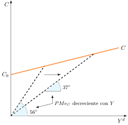
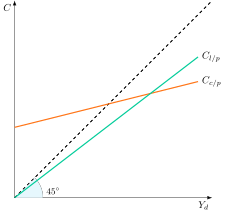
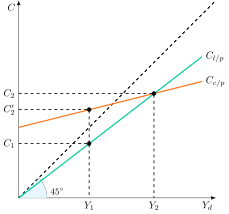
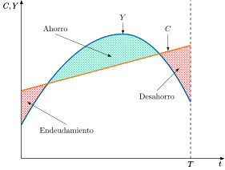
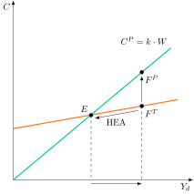

Apuntes para la oposición al Cuerpo de Diplomados Comerciales del Estado
3 Teorías de la demanda de consumo corriente: ciclo vital y renta permanente. Evidencia empírica e implicaciones de política económica.
3.1 Introducción  1'
1'
Para Adam Smith (1776), el consumo es el único fin y propósito de toda la producción. Es además el mayor componente de la demanda: en las economías avanzadas supone más de la mitad del PIB.1 De ahí que explicar de qué depende sea una cuestión central de la Macroeconomía.
Importa tanto a largo plazo, porque el ahorro, que es lo que no se consume, determina la acumulación de capital y el bienestar futuro, como a corto plazo, porque sus fluctuaciones son clave en las expansiones y las recesiones y la propensión marginal a consumir determina la eficacia de la política fiscal.
El objetivo de la presente exposición será analizar teóricamente en qué medida el consumo depende de la renta presente, la de toda la vida o la esperada, a través del siguiente esquema:
Teorías de la renta actual: Keynes y Duesenberry.
Teorías de la renta normal: renta permanente y ciclo vital.
Consumo e incertidumbre: el paseo aleatorio de Hall.
Desarrollos recientes, evidencia empírica e implicaciones de política económica.
3.2 Teorías de la renta actual 5'
Las teorías de la renta actual analizan cómo la renta disponible en un período influye directamente en el consumo y el ahorro.
Teoría de la renta absoluta de Keynes
Comenzando con la teoría keynesiana, John Maynard Keynes fue el primer economista que elaboró una función de demanda de consumo agregada2 en su Teoría General (Keynes 1936), donde considera el consumo como el fin último de la actividad económica, en contraposición a los neoclásicos, que consideraban el consumo como residual una vez que los tipos de interés habían determinado el ahorro.
El consumo –y el ahorro– keynesiano está muy poco influido por los tipos de interés, de forma que su factor determinante es la renta en el período y no la variación de los tipos de interés, lo que contrasta con la opinión de los economistas clásicos.
Modelo
Para Keynes, la demanda de consumo viene dada como una ley psicológica fundamental3 expresada en 2 proposiciones:
La demanda de consumo real, \(C_{t}\), es una función estable de la renta disponible del período, \(Y^{d}\), aunque también contiene un componente autónomo, \(C_{0}\), es decir, consumo mínimo o de subsistencia.
La propensión marginal a consumir, \(c\), es lo que aumenta el consumo cuando la renta disponible aumenta en una unidad, y tendrá un valor entre 0 y 1, es decir, la gente está dispuesta a aumentar su consumo cuando sube su renta, pero en una cantidad menor.4
Por lo tanto, la función de consumo que satisface estas propiedades, en su versión lineal habitual, es la siguiente5
\[C_{t}=C_{0}+c\cdot Y^{d},\quad0<c<1 \tag{3.1}\]
Además, Keynes añade otras 2 hipótesis:
La propensión media a consumir, \(PMe_{C}\), es decir, la proporción de la renta disponible que se consume, \(C/Y^{d}\) (gráficamente, la pendiente del rayo vector desde el origen), es mayor que la propensión marginal a consumir, \(PMg_{C}\): \(PMe_{C}>PMg_{C}\)6.
La propensión media tiende a reducirse a medida que aumenta la renta, es decir, los individuos con más recursos ahorrarán una mayor proporción de su renta determinando el ahorro como un bien de lujo. Así, Keynes creía que el ahorro era un lujo puesto que son los individuos con más renta los que más ahorran.
Gráficamente, en un plano de consumo, \(C\), y renta disponible, \(Y^{d}\), como el de la Figura 3.1, se representan la función de consumo, \(C=C_{0}+c\cdot Y^{d}\), y los rayos desde el origen hasta dos de sus puntos. Así:
La pendiente de la función es la propensión marginal a consumir, \(c\), que es menor que la propensión media.
La propensión media a consumir es la pendiente del rayo desde el origen hasta el punto de la función.
A medida que aumenta la renta disponible, el rayo es menos inclinado, es decir, la propensión media a consumir es menor.

Implicaciones de política económica
Bajo estas premisas:
La política fiscal sí tiene efectos sobre el consumo ya que afecta a la renta del período, y ésta al consumo. Tanto el gasto público como los impuestos tienen un efecto multiplicador, si bien el efecto del aumento del gasto público es mayor que el efecto de una disminución de los impuestos (ya que un aumento del gasto estimula directamente la demanda agregada, mientras que una disminución de los impuestos aumenta la renta disponible de los hogares, y esa cantidad la pueden dedicar a consumo –demanda agregada– o a ahorro78): \[\dfrac{\partial Y}{\partial G}=\dfrac{1}{1-c}\quad\dfrac{\partial Y}{\partial T}=\dfrac{-c}{1-c} \tag{3.2}\]
La política monetaria no tendrá demasiados efectos sobre el consumo. La inversión forma parte de la renta, y en la demanda de inversión keynesiana aparece el tipo de interés: \(I=I_{0}\text{–} b\cdot r\). Sin embargo, la inversión keynesiana depende fundamentalmente de \(I_{0}\), que representa los animal spirits, y menos de \(b\cdot r\).
Las políticas redistributivas serán efectivas para aumentar el consumo, ya que los individuos con menor renta tienen una mayor propensión marginal a consumir, de modo que cada euro transferido de un hogar rico a uno pobre eleva el consumo agregado (y por ende la demanda).9
Hipótesis del estancamiento secular
Además, Alvin Hansen (Hansen 1939, 1941, 1947) formuló la tesis del estancamiento secular10, con importantes implicaciones de política económica:
Si una economía experimenta un crecimiento de la renta sostenido, de acuerdo con la teoría keynesiana, la \(PMe_{C}\) disminuirá.
En esta situación, a no ser que la ratio de inversión sobre la renta aumente continuamente (\(I/Y\)) (cosa poco probable, ya que, según Keynes la inversión no depende de la renta sino de los animal spirits), la única manera de sostener el crecimiento de la demanda y mantener pues el pleno empleo es que el gasto público como porcentaje del PIB aumente (\(Y/Y=1=\downarrow C/Y+\text{¿} I/Y+\uparrow G/Y\)).
Esto reafirma las conclusiones keynesianas sobre el uso de la política fiscal.
No obstante, la evidencia empírica desmontó dicha hipótesis:
En efecto, tras la Segunda Guerra Mundial, la renta disponible comenzó a crecer de forma sostenida y el gasto público disminuyó por el fin de la guerra, y el consumo, sin embargo, creció.
La razón es que, durante la guerra, los particulares se vieron racionados en el mercado de bienes (escasez de bienes de consumo), por lo que acumularon bonos del Gobierno y otros activos financieros. Una vez finalizada la guerra los particulares convirtieron esos bonos en efectivo y de ese modo experimentaron un importante efecto riqueza, aumentando el consumo11.
Dicho efecto riqueza será muy importante en el análisis del consumo en la teoría de la renta normal que comentaremos posteriormente.
Evidencia empírica
Simon Kuznets (1901-1985) estudió los datos agregados de consumo y de renta para Estados Unidos, obteniendo las siguientes conclusiones12:
Los datos de sección cruzada (Kuznets 1941) (que analizan diferentes hogares en un momento puntual del tiempo) sugieren que la \(PMe_{C}\) es decreciente con la renta.
Los datos de series temporales cortas (que analizan la evolución del consumo y la renta agregados durante pocos años) también sugieren que la \(PMe_{C}\) es decreciente con la renta.
Sin embargo, Kuznets (1946) realiza nuevas estimaciones con los datos de series temporales largas desde 1869, y encuentra el llamado “enigma del consumo”: la propensión media a consumir es igual a la marginal, \(PMe_{C}=PMg_{C}\), es decir, es estable durante periodos largos de tiempo, contradiciendo así a Keynes13.
En resumen, la evidencia empírica concluye que:
Para series temporales cortas o datos de sección cruzada se cumple la teoría keynesiana con una función de consumo a corto plazo \(C_{c/p}\).
Para series temporales largas el ajuste se va a realizar mediante funciones tipo \(C_{l/p}=c\cdot Y\), es decir, sin componente autónomo como se observa en la Figura 3.2. Además sugiere introducir la riqueza en el análisis de la función del consumo.

Teoría de la renta relativa de Duesenberry
Trata de ofrecer una teoría que sea acorde con la evidencia empírica a corto plazo (\(PMe_{C}\) decreciente) y a largo plazo (\(PMe_{C}\) constante).
Esta teoría añade fundamentos psicológicos a la teoría del consumo (basándose en encuestas sobre ingresos y gastos familiares). James Duesenberry (1949) afirma que la satisfacción o utilidad que obtiene un individuo del consumo no depende solamente de su nivel absoluto (como decía Keynes), sino también de los niveles de consumo del entorno social con los que entra en contacto. Por eso el consumo depende de la renta relativa, es decir, de la renta del hogar en relación con la de su grupo de referencia y con la más alta que alcanzó en el pasado.
Modelo
Gráficamente, en un plano de consumo, \(C\), y renta, \(Y\), como el de la Figura 3.3, se representan la curva de consumo de largo plazo, \(C_{lp}\), y la de corto plazo, \(C_{cp}\). Así:
A largo plazo la renta tiende a aumentar. Al crecer la renta a lo largo de su tendencia, consumo y renta crecen manteniendo constante la relación \(C/Y\), y se obtiene la curva \(C_{lp}\), que es recta y parte del origen. Por lo tanto, a largo plazo la \(PMe_{C}\) es constante con la renta, tal y como mostraba la evidencia empírica de Kuznets.
A corto plazo, si en un momento dado la economía entra, por ejemplo, en recesión (de \(Y_{2}\) a \(Y_{1}\)), consumo y renta no caerán a lo largo de la curva \(C_{lp}\), sino a lo largo de la curva de corto plazo \(C_{cp}\), más plana pues los agentes tratarán de mantener niveles pasados de consumo, \(C^{\prime}_{2}\) vía desahorro (\(\uparrow PMe_{C}=\downarrow C/Y\downarrow\downarrow\), por lo que \(\downarrow PMe_{C}=\uparrow C/Y\uparrow\uparrow\))
Por lo tanto, a corto plazo la \(PMe_{C}\) aumenta cuando decrece la renta o, lo que es lo mismo, a corto plazo la \(PMe_{C}\) es decreciente con la renta, tal y como mostraba la evidencia empírica.
Al superar la crisis y volver la economía a su tendencia, el consumo vuelve a la situación del punto \(Y_{2}\), donde retoma la curva \(C_{lp}\) (donde la proporción \(C/Y\) es constante)14.

Los 2 efectos que explican que la \(PMe_{C}\) sea decreciente con la renta en el corto plazo son:
Efecto emulación/demostración: un individuo con menor renta va a tener mayor \(PMe_{C}\) porque va a tratar de emular al resto de la sociedad15, intentando demostrar que, a pesar de su menor renta, es capaz de permitirse un consumo análogo al de sus vecinos. Este efecto explica la evidencia empírica de los datos de sección cruzada que sugieren que la \(PMe_{C}\) es decreciente con la renta.
Efecto trinquete: a los individuos les cuesta rebajar sus niveles de consumo y estos dependen de los niveles de consumo pasados (histéresis en el consumo). Así, ante una reducción de su renta, el individuo intentará mantener su consumo reduciendo la parte de su renta destinada al ahorro. Este efecto explica la evidencia empírica de los datos de series temporales cortas, que, recordemos, sugieren también que la \(PMe_{C}\) es decreciente con la renta. El efecto trinquete (ratchet effect) solo actúa cuando la renta cae. Cuando la renta supera su máximo anterior, el consumo crece a lo largo de la curva de largo plazo y la propensión media a consumir se mantiene constante.
Por lo tanto, en el corto plazo va a ser más fácil incentivar el consumo que desincentivarlo.
Además, Duesenberry supone que si la renta aumenta, aumenta para todos los individuos de forma que no varíe la distribución relativa de la renta. Por tanto, todos los hogares seguirán estando en la misma situación relativa, de manera que no habrá ningún cambio previsible provocado por el “efecto demostración”. Esto es importante puesto que, por tanto, los factores que podrían explicar una \(PMe_{C}\) decreciente no se dan en el largo plazo, y la \(PMe_{C}\) será constante.
Implicaciones de política económica
Al ser más fácil incentivar el consumo que desincentivarlo, Duesenberry propone políticas fiscales expansivas, siendo las políticas fiscales contractivas muy poco eficaces.
Evidencia empírica
La teoría de la renta relativa consigue explicar que la \(PMe_{C}\) a largo plazo sea constante (algo que no lograba explicar Keynes).
Valoración y críticas
Aunque explica adecuadamente el comportamiento del consumidor en recesión y se adapta muy bien a la evidencia empírica, esta teoría no es tan rigurosa explicando cómo, tras la recesión, el consumidor recupera sus niveles anteriores de consumo hasta situarse de nuevo sobre su curva tendencial. Además:
Asume que a largo plazo la distribución de la renta no varía, lo cual no es realista.
No tiene fundamentación microeconómica.
No incluye expectativas (sobre la renta futura) en un contexto dinámico.
Difícil modelizar una función de consumo con externalidades en consumo16.
La competencia socioeconómica (“igual de mejor que mi vecino”) implica conflictos con la representación favorita del homo economicus como individuo independiente, racional y maximizador.
No obstante, las aportaciones más importantes de esta teoría son:
El consumo se fija en base a un concepto de renta diferente a la renta del período.
La idea de la suavización del consumo a través del ahorro/desahorro es muy relevante en las próximas teorías como pasamos a ver.
3.3 Teorías de la renta normal 8'
No obstante, los individuos no toman sus decisiones de consumo basándose únicamente en su renta actual como se ha explicado en las teorías anteriores, sino también en sus expectativas de ingresos futuros. Por ello, en los años 50 surgieron nuevas teorías basadas en el análisis intertemporal, que será un enfoque que no se abandonará en aportaciones posteriores. Estas teorías de la renta normal17 van a introducir la riqueza como variable determinante del comportamiento de la demanda de consumo y su objetivo será conocer la senda de consumo y comprobar si esta es estable o inestable.
Modelo de la renta normal
La elección intertemporal fue establecida por Rae (1834) y Böhm-Bawerk (1884), formalizada en el modelo de 2 periodos de Fisher (1930) y extendido su análisis a múltiples periodos por Samuelson (1937, 1952, 1958)18. Los fundamentos microeconómicos del modelo de la renta normal que se va a analizar son:
Certidumbre, por lo que no existe el ahorro por motivo precaución.
El objetivo último es el consumo.
Los consumidores elaboran planes a largo plazo, es decir, tienen un comportamiento “forward-looking” e intentan moderar o suavizar la senda de consumo a lo largo de su vida.
La riqueza y el ahorro son medios para consumir en el futuro.
Los consumidores maximizan su utilidad a lo largo de su senda de consumo temporal.
Matemáticamente, se va a plantear un problema maximizador de la utilidad intertemporal (aditivamente separable, creciente y cóncava)19 del consumidor en un horizonte infinito, \(u\left(c_{t}\right)\), y un factor de descuento, \(\beta\), menor a 1 que indica el grado de impaciencia en el tiempo –dado que la utilidad futura se descuenta mediante el mismo– por lo que la tasa de descuento, \(\rho\), es mayor a 020: \[\underset{\left\{ c_{t}\right\} ^{\infty}_{t=0}}{\max}\quad U=\sum\limits_{t=0}^{\infty}\beta^{t}u\left(c_{t}\right),\quad\beta=\dfrac{1}{1+\rho}<1 \tag{3.3}\] sujeta a dicha función objetivo existe una restricción donde el valor actualizado neto de la corriente de ingresos21, \(Y_{t}\), se iguala al valor actualizado neto del consumo, \(C_{t}\), siendo los ingresos, \(Y_{t}\), y el tipo de interés, \(r\), variables exógenas, donde el ingreso no consumido en un período es ahorrado, \(a_{t}\), y contribuye a los recursos disponibles para el consumo futuro, de forma que el ahorro se convierte en un vehículo de distribución del consumo22: \[\sum\limits_{j=0}^{T}\dfrac{Y_{t+j}-C_{t+j}}{\left(1+r\right)^{j}}=\dfrac{a_{t+T+1}}{\left(1+r\right)^{T}} \tag{3.4}\] La última restricción es la condición de transversalidad, que impone que el valor de los activos que se dejan después del momento final es cero \[\lim_{T\rightarrow\infty}\dfrac{a_{t+T+1}}{\left(1+r\right)^{T}}=0 \tag{3.5}\] esta restricción elimina la posibilidad de que el consumidor desarrolle un juego de Ponzi, es decir, que tome prestado para consumir y no devuelva nunca sus deudas, en una espiral en que la deuda del individuo tiende a infinito2324.
Resolviendo el problema de optimización intertemporal, de la CPO se obtiene la ecuación de Euler, que establece la igualdad entre la utilidad marginal de una unidad consumida hoy, \(u^{\prime}\left(c_{t}\right)\), con la utilidad marginal de una unidad ahorrada, es decir, el coste e ingreso marginal del ahorro se igualan25: \[\underbrace{u^{\prime}\left(c_{t}\right)}_{\text{CMg Ahorro}}=\underbrace{\beta\left(1+r\right)u^{\prime}\left(c_{t+1}\right)}_{\text{IMg Ahorro}} \tag{3.6}\] además, indica la senda de consumo en función del valor del tipo de interés, \(r\), y la tasa de descuento, \(\rho\):
Si \(r=\rho\), entonces \(u^{\prime}\left(c_{t}\right)=u^{\prime}\left(c_{t+1}\right)\), por lo que el nivel de consumo es igual a ambos períodos, es decir, la senda de consumo es constante.
Si \(r>\rho\), entonces \(u^{\prime}\left(c_{t}\right)>u^{\prime}\left(c_{t+1}\right)\), por lo que \(c_{t}<c_{t+1}\) y la senda de consumo será creciente. Esto se explica porque al individuo le es más beneficioso aprovechar el alto tipo de interés y ahorrar en el momento \(t\).
Si \(r<\rho\), entonces \(u^{\prime}\left(c_{t}\right)<u^{\prime}\left(c_{t+1}\right)\), por lo que \(c_{t}>c_{t+1}\) y la senda de consumo será decreciente. Esto refleja que el individuo es muy impaciente, por lo que prefiere consumir mucho en el momento \(t\).
De este modelo se derivan las siguientes implicaciones de política económica:
El consumo en un periodo no depende de la renta corriente sino de un horizonte temporal más amplio, es decir, la elasticidad de la renta normal respecto a la del periodo es inferior a la unidad. Por ello, la actuación estabilizadora de las autoridades de política económica no debe ser tan intensa ni frecuente como recomendaba Keynes. Este razonamiento da lugar a la teoría de la renta permanente de Friedman.
El consumo se suaviza: el ahorro se acomoda para poder llevar a cabo un consumo suavizado a lo largo de la vida . Este razonamiento es el origen de la Teoría del ciclo vital de Ando, Brumberg y Modigliani.
La evolución temporal de la renta no es, pues, importante para el consumo, pero es clave para el ahorro, pues éste es la diferencia entre renta y consumo corrientes. Por tanto, el ahorro es alto cuando la renta es elevada y viceversa.
Una política anunciada hoy y que afecte a la renta futura tendrá efectos sobre el consumo presente.
La política monetaria tendrá mayor efecto al influir esta sobre el tipo de interés el cual provocará efectos de tipo Efecto Renta (normal y dotación) y Efecto Sustitución26.
A continuación se diferencian 2 teorías de la renta normal: la teoría de la renta permanente de Milton Friedman y la teoría del ciclo vital de Ando, Brumberg y Modigliani.
Teoría de la renta permanente
Comenzando con la teoría de la renta permanente de Milton Friedman (Friedman 1957), en ella plantea como determinante del consumo la renta permanente, \(Y^{P}\), entendida como el flujo de renta que puede ser consumido en un periodo de tiempo sin afectar al valor de la fuente de la cual proviene.
Modelo
Para analizar el comportamiento de los agentes que prefieren suavizar la senda de consumo y explicar las regularidades empíricas de Kuznets, Friedman considera que la renta, \(Y_{t}\), en un periodo tiene dos componentes, uno permanente, \(Y^{P}_{t}\), y otro componente transitorio, \(Y^{T}_{t}\): \[Y_{t}=Y^{P}_{t}+Y^{T}_{t} \tag{3.7}\]
La renta permanente, \(Y^{P}\)
,es la que se espera que persista en el futuro. Es aquel flujo de renta que puede ser mantenido permanentemente en el tiempo al poder ser consumido íntegramente sin afectar a la fuente de la que se deriva. La renta permanente implica consumir el rendimiento de la riqueza, \(r\cdot W\), siendo \(r\) el tipo de interés, pero no más, para que así en el período siguiente se pueda disponer de la misma renta permanente:
\[Y^{P}_{t}=r\cdot W_{t} \tag{3.8}\] donde la riqueza, \(W\), es la suma de los saldos monetarios, \(M\), el valor actualizado de los bonos, \(B/r\), el capital, \(K\), las acciones, \(A\), y el valor actual de los salarios presentes y futuros esperados, \(w\), es decir, la riqueza humana. \[W=M+\dfrac{B}{r}+K+A+w \tag{3.9}\]
Sin embargo, la renta permanente no es observable. De ahí que, según Friedman, los individuos la tengan que estimar, y lo hacen sobre la base de la hipótesis de las expectativas adaptativas (HEA), según la cual el individuo estima su renta permanente observando sus rentas pasadas27.
La renta transitoria, \(Y^{T}_{t}\)
, es el componente formado por los shocks transitorios que afectan a la renta del período (y no tienen correlación ni con sus respectivos componentes permanentes ni entre sí, \(Cov\left(Y^{P}_{t},Y^{T}_{t}\right)=0\))28. Tiene media nula y varianza homocedástica29.
A su vez, el consumo en un periodo, \(C_{t}\), también consta de un componente permanente, \(C^{P}_{t}\), y otro componente transitorio, \(C^{T}_{t}\) \[C_{t}=C^{P}_{t}+C^{T}_{t} \tag{3.10}\]
El consumo permanente, \(C^{P}_{t}\)
,para Friedman será proporcional en una constante, \(k\), a la renta permanente, reflejando el deseo del individuo de suavizar su patrón de consumo \[C^{P}_{t}=k\cdot Y^{P}_{t},\quad0<k<1\]
Dicha constante \(k\) depende, negativamente del tipo de interés –coste de oportunidad del consumo– y de la proporción de rentas que se espera obtener del trabajo, \(W_{L}\), en relación al total de rentas30 \[k=f(\underset{-}{r},\underset{-}{\dfrac{W_{L}}{W}}) \tag{3.11}\] también se podría considerar un tercer elemento \(\theta\) del que también dependa el consumo si tenemos en cuenta las preferencias de los individuos: \(k=f\left(r,\frac{W_{L}}{W},\theta\right)\)
El consumo transitorio, \(C^{T}_{t}\)
, representa los gastos no anticipables (por ejemplo enfermedades) (y no tienen correlación ni con sus respectivos componentes permanentes ni entre sí, \(Cov\left(C^{P}_{t},C^{T}_{t}\right)=0\)). Es independiente de la renta permanente, \(\rho\left(Y^{P}_{t},C^{T}_{t}\right)=0\). Los componentes transitorios del consumo pueden ser importantes a nivel individual, pero se cancelan a nivel agregado. Además, el consumo permanente y transitorio son independientes de la renta transitoria.
Evidencia empírica
En la teoría de la renta permanente se cumple nuevamente la evidencia empírica observada por Kuznets:
\(PMe_{C}\) decreciente con la renta a corto plazo: el consumo crece proporcionalmente menos que la renta total, ya que la renta transitoria aún no se ha incorporado a la estimación de la renta permanente, por lo que crece la renta total pero no el consumo: \(\downarrow PMe_{C}=\dfrac{C}{Y\uparrow}\)
\(PMe_{C}\) constante a largo plazo: el consumo crece proporcionalmente a la renta: \(PMg_{C}=PMe_{C}=k\)
Así, es posible que a corto plazo los individuos con un componente negativo de la renta transitoria no han deducido esa cantidad de su renta permanente y consumen por encima de lo razonable y al contrario cuando la renta transitoria fuera positiva
Implicaciones de política económica
Las implicaciones de política económica derivadas del modelo son:
El sector privado se comporta por sí mismo de manera muy estable, es decir, suaviza el consumo, por lo que no es necesaria la intervención del sector público.
La política fiscal transitoria apenas tendrá efectos sobre el consumo, ya que solo altera \(Y^{T}\) y no \(Y^{P}\), de manera que el individuo ahorrará la mayor parte de la renta adicional.31
La política monetaria sí tendrá efectos sobre el consumo a corto plazo pues afecta tanto a \(W\) mediante un efecto riqueza32 como a \(k\) mediante el tipo de interés, pero es neutral a largo plazo por la teoría cuantitativa del dinero.
No obstante, un cambio permanente en la renta como un incremento salarial permanente, o una reducción estructural de la carga impositiva incrementará el consumo en una proporción, \(k\), del incremento de la renta permanente.
Críticas
Las críticas que se le imputan a esta teoría son
La renta permanente, \(Y^{P}\), no es observable.
El consumidor trata de suavizar su senda de consumo a lo largo de su horizonte vital mirando hacia el futuro –forward looking–, y, sin embargo, estima su renta permanente mirando hacia atrás –HEA–, lo que supone una contradicción.
Friedman parte de la HEA, que es poco convincente en comparación con la hipótesis de las expectativas racionales (HER).
La explicación del consumo transitorio es poco convincente.
Se basa en información perfecta sobre los flujos de renta a lo largo de toda la vida.
Teoría del ciclo vital
Por otro lado, la teoría del ciclo vital, desarrollada por Brumberg y Modigliani (1954) y Ando y Modigliani (1963), es una teoría de la renta normal que trata de explicar la senda de consumo de individuo representativo a lo largo de la vida.
La Teoría de la renta permanente es totalmente compatible con la Teoría del ciclo vital, con la única diferencia de que ésta última se centra en el papel que juega el ahorro en la determinación del plan de consumo óptimo.
Modelo
Gráficamente, en un plano de consumo, \(C\), y renta, \(Y\), frente al tiempo, como el de la Figura 3.4, se representan la renta del individuo a lo largo de su vida y su consumo. Así:
Parte del análisis microeconómico de la maximización de la utilidad del agente en un contexto intertemporal sujeto a la restricción presupuestaria (que no es la renta del periodo sino la de toda su vida, es decir, como los modelos OLG).
El consumo, \(C\), es constante a lo largo de la vida del individuo, o creciente si el tipo de interés supera a la tasa de descuento.
La renta, \(Y\), no es constante, sino que la corriente de ingresos del individuo es normalmente elevada en la etapa central de su vida y relativamente baja al inicio y al final de la misma (cuando son jóvenes y ancianos sus ingresos son bajos y cuando están trabajando más altos).
El consumidor utiliza el ahorro y el desahorro para suavizar su senda de consumo (dicho consumo se mantiene estable pero su renta va a ir variando), de manera que se endeuda en los primeros años, ahorra en el período de renta alta y desahorra en su jubilación33.

Función de consumo individual, \(c^{T}\)
,es el consumo de un individuo cuya muerte ocurrirá en \(T\), donde \(k\) es una constante y \(w\) representa la riqueza del individuo a lo largo de su ciclo vital: \[c^{T}=k^{T}\cdot w^{T} \tag{3.12}\]
La función de consumo agregada
será equivalente a la individual siempre que no existan problemas de agregación, para lo cual es necesario que permanezcan constantes:
La estructura demográfica (es decir, pirámide poblacional).
La distribución de la renta por edades.
Los patrones de consumo por edades (es decir, preferencias sobre el consumo presente y futuro).
Implicaciones de política económica
Son similares a las de la Teoría de la renta permanente de Friedman, ya que el consumo viene determinado por la corriente de ingresos a lo largo del ciclo vital (es decir, renta permanente), por lo que la variación de la renta temporal tiene poca influencia sobre el nivel de consumo. Sin embargo, en la medida en que los ingresos futuros son proporcionales al ingreso actual, si la variación de la renta no es transitoria34:
Una Política Fiscal expansiva (vía reducción de los impuestos), tiene efectos sobre la renta.
Una Política Monetaria, que hace caer los tipos de interés, tiene efectos sobre el valor actual de la riqueza y por lo tanto provoca un incremento del nivel de consumo.
Evidencia empírica
Se confirman de nuevo los datos resultado de los estudios de sección cruzada. La Teoría del ciclo vital explica por qué la \(PMe_{C}\) es decreciente con la renta: las familias con más ingresos (es decir, las de la fase intermedia –adultos–), ahorrarán proporcionalmente más, por lo que consumirán proporcionalmente menos .
De este modo:
Los datos de series temporales cortas (que analizan la evolución del consumo y la renta agregados durante pocos años) también sugieren que la \(PMe_{C}\) es decreciente con la renta. Cuando la renta cae en una recesión, los hogares mantienen su consumo apoyándose en la riqueza acumulada, de modo que \(C/Y\) aumenta, y cuando la renta sube ocurre lo contrario.35
Los datos de series temporales largas sugieren que la \(PMe_{C}\) es constante. En el largo plazo, la renta equivaldrá a una media determinada (baja al principio y al final mientras que en el medio será alta). El consumo medio será por lo tanto constante si calculado con respecto a dicha media.
Críticas
No obstante, a pesar de que esta teoría tiene como ventaja la introducción de las tendencias demográficas en los patrones de consumo o el análisis de pensiones, no está exenta de críticas:
Toda la renta actual es permanente, no teniendo en cuenta rentas transitorias.
No tiene en cuenta la posible existencia de restricciones de liquidez que impidan el desahorro.
Se basa en el supuesto de información perfecta sobre los flujos de renta a lo largo de toda la vida.
En suma, las dos teorías de la renta normal que acabamos de ver se basan en que los agentes tienen certidumbre sobre las rentas futuras, pero la realidad es que los agentes toman las decisiones en un contexto de incertidumbre. Para tratar esta limitación surge la teoría del paseo aleatorio de Hall.
3.4 Consumo e incertidumbre: la teoría del paseo aleatorio 3'30"
Robert Hall, en su artículo “Stochastic Implications of the Life Cycle-Permanent Income Hypothesis: Theory and Evidence” (1978) se basa en la maximización intertemporal de la función de utilidad esperada aplicando la hipótesis de las expectativas racionales.
La HER se define como la hipótesis de que los agentes económicos, al formular sus expectativas de comportamiento futuro de las variables económicas:
Utilizan eficientemente toda la información disponible, y
No cometen errores sistemáticos.
Así, los agentes utilizan toda la información disponible de forma eficiente en el momento de formular las expectativas, \(\Omega_{t-1}\):
\[C^{e}_{t}=\mathbb{E}\left(C_{t}|\Omega_{t-1}\right) \tag{3.13}\] por lo tanto, el valor de la variable en el momento \(t\) será igual al valor esperado de la variable más un termino de error o ruido blanco \[C_{t}=C^{e}_{t}+\varepsilon_{t} \tag{3.14}\]
La conclusión principal del modelo es que la única variable apropiada para predecir el consumo futuro es el consumo presente.
Modelo
La idea es que:
En el período \(t\text{–} 1\) el individuo fija su nivel de consumo, \(c_{t-1}\), a partir de toda la información relevante disponible en dicho período \(t\text{–} 1\) y anteriores.
En el período \(t\), el consumo se ajustará para incluir la nueva información que no estaba disponible en el período anterior. Esta información adicional tiene que ser completamente novedosa de las anteriores, ya que si no lo es, los consumidores la habrían previsto e incorporado a su decisión de consumo en el período \(t\text{–} 1\).
De esta manera el consumo presente es el mejor predictor sobre el consumo futuro, y la diferencia reflejará la nueva información sobre el resto de variables (rentas, tipos de interés, etc.).
Analíticamente, el programa de optimización al que se enfrenta el individuo en este contexto estocástico es el mismo que el del modelo de elección intertemporal que explicábamos antes, con una diferencia: la función de utilidad del individuo es ahora una función de utilidad esperada: \[UE=\mathbb{E}_{t}\left\{ \sum\limits_{j=0}^{\infty}\beta^{j}u\left(c_{t+j}\right)\right\} \tag{3.15}\] donde el operador \(\mathbb{E}\left\{ \right\}\) es una esperanza condicionada, es decir, una media ponderada por las probabilidades de los resultados posibles, estando las probabilidades condicionadas por toda la información disponible para el agente decisor, incluida la del período \(t\). Por otro lado, la restricción presupuestaria es igual que en un contexto de certeza.
Así, la CPO será la Ecuación de Euler con la función de utilidad esperada: \[\dfrac{u^{\prime}\left(c_{t}\right)}{\mathbb{E}\left[u^{\prime}\left(c_{t+1}\right)\right]}=\dfrac{1+r}{1+\delta} \tag{3.16}\]
Así, Hall establece los siguientes supuestos:
Los consumidores descuentan el futuro a una tasa subjetiva igual al tipo de interés de mercado, \(r=\rho\), por lo que sustituyendo en la ecuación de Euler ( 3.16), esta quedará como \[u^{\prime}\left(c_{t}\right)=\mathbb{E}\left[u^{\prime}\left(c_{t+1}\right)\right] \tag{3.17}\]
Se aplicará HER en la anterior expresión ( 3.17), por lo que el consumo seguiría un paseo aleatorio, de modo que los cambios en el consumo son impredecibles: la mejor predicción para el consumo en el período siguiente es el consumo en el período actual \[u^{\prime}\left(c_{t+1}\right)=u^{\prime}\left(c_{t}\right)+\varepsilon_{t+1} \tag{3.18}\] donde \(\varepsilon\) representa el error que introduce aleatoriedad al proceso.
Función de utilidad cuadrática36 \[u\left(c\right)=c-\dfrac{\alpha}{2}\cdot c^{2} \tag{3.19}\] por lo que la utilidad marginal será lineal \[u^{\prime}\left(c\right)=1-\alpha\cdot c \tag{3.20}\]
Por lo tanto, el mejor estimador del consumo en \(t+1\) es el consumo en \(t\), de manera que el consumo se comporta como un paseo aleatorio37 donde \(\varepsilon^{\prime}_{t+1}\) es el término de error (por ejemplo, la nueva información acerca de rentas futuras no disponible en períodos anteriores, los tipos de interés, etc.). En el periodo \(t\), el consumidor toma sus decisiones de consumo para el periodo \(t+1\), utilizando toda la información disponible en el periodo \(t\).
Implicaciones de política económica
Las principales implicaciones de política económica son:
Ni la renta ni la riqueza pasadas ayudan a predecir las variaciones del consumo –rompedor respecto a las teorías anteriormente analizadas–, ya que el consumo en un período solo tiene en cuenta el consumo en el período anterior, de modo que la renta y la riqueza solo influyen a través de la información nueva que contienen.
La política económica va a ser efectiva a través de su impacto en el término de error, \(\varepsilon^{\prime}_{t+1}\), es decir, solo si los cambios no son esperados.
Aunque veremos luego que los resultados se contraponen con la evidencia empírica, el modelo predice:
Ausencia de sensibilidad del consumo ante cambios esperados de la renta actual.
La política económica anunciada no tendrá ningún efecto cuando se aplique, porque ya se incorporó a las decisiones de consumo en el momento del anuncio. Es decir, los cambios ya anticipados están recogidos en \(c_{t}\).Reacción del consumo solo ante cambios inesperados de la renta38.
Solo los cambios no esperados de política económica influirán en el consumo futuro, a través de su impacto en el componente “\(\varepsilon_{t}\)”. Los shocks que afecten al consumo tendrán efectos permanentes, dado que NO existe reversión a una media.
Críticas
Las principales críticas al modelo del paseo aleatorio tienen que ver con la función de utilidad cuadrática:
Con una función de ese tipo, la utilidad marginal podría llegar a ser negativa a partir de un cierto nivel de consumo, \(u^{\prime}\left(c\right)=1-\alpha\cdot c\)
Con una función de este tipo, los individuos presentan una aversión absoluta al riesgo creciente con la renta, lo cual puede medirse a través del coeficiente de Arrow-Pratt \[ARA=-\dfrac{u^{\prime\prime}}{u^{\prime}}=\dfrac{\alpha}{1-\alpha\cdot c} \tag{3.21}\] es decir, conforme aumenta el consumo –lo cual puede interpretarse como que el individuo es más rico–, más averso al riesgo se vuelve. Esto hará que el nivel de consumo óptimo sea muy estable debido a la aversión al riesgo, lo que no concuerda con la propia hipótesis del paseo aleatorio que predice un consumo muy inestable.
Además, la teoría del paseo aleatorio tampoco termina de casar con la evidencia empírica, donde se muestra un exceso de sensibilidad del consumo a la renta y el exceso de suavidad de consumo39.
El contraste empírico del modelo de Hall se centra en el exceso de sensibilidad, es decir, en si los cambios previsibles de la renta anticipan cambios del consumo (Flavin 1981). Campbell y Mankiw (1989) lo contrastan con datos agregados trimestrales de Estados Unidos de 1953 a 1986. Su hipótesis alternativa es que una fracción de los consumidores, \(\lambda\), gasta simplemente su renta corriente y el resto sigue a Hall: \[\Delta c_{t}=\lambda\cdot\Delta Y_{t}+\left(1-\lambda\right)\cdot\varepsilon_{t} \tag{3.22}\] donde \(\Delta c_{t}\) es la variación del consumo agregado per cápita de bienes no duraderos y servicios, \(\Delta Y_{t}\) la de la renta personal disponible per cápita y \(\varepsilon_{t}\) la revisión de la renta permanente. Estiman \(\lambda\) en 0,42 con tres retardos del crecimiento del consumo como instrumentos (error estándar de 0,16) y en 0,52 con cinco (error estándar de 0,13). Es decir, algo más de la mitad de cada incremento previsible de la renta se destina a consumo. Al ser \(\lambda\) claramente inferior a 1, la hipótesis de la renta permanente sigue siendo importante para entender el consumo, pero la versión de paseo aleatorio se rechaza.
Los trabajos con datos de hogares apuntan en la misma dirección. Shea (1995) analiza hogares cuyos cabezas de familia están cubiertos por convenios sindicales de larga duración, lo que permite medir el crecimiento salarial esperado. Encuentra que los movimientos salariales previsibles se correlacionan con los cambios del consumo. Además, el consumo responde más a las caídas previsibles de la renta que a las subidas, una asimetría que no encaja con las restricciones de liquidez y sí con preferencias con aversión a las pérdidas.
La excepción más citada es la de Hsieh (2003). Cada octubre, Alaska reparte entre todos sus residentes parte de los rendimientos de un fondo alimentado con las regalías del petróleo, el Alaska Permanent Fund, con pagos conocidos con bastante antelación y superiores en los últimos años a 1.000 dólares por persona. Según la hipótesis de la renta permanente, el consumo no debería subir al cobrarlos. Hsieh no encuentra respuesta apreciable, ya que el efecto estimado de los pagos sobre el consumo es prácticamente nulo y no significativo. Sin embargo, ante las devoluciones del impuesto sobre la renta, un cambio previsible más pequeño y menos visible, el consumo sí reacciona. Hsieh lo interpreta como que la hipótesis describe bien las respuestas a cambios grandes y llamativos, pero no a los pequeños.40
3.5 Desarrollos recientes 2'
Algunos desarrollos posteriores tratan de explicar, a través de la relajación de supuestos, por qué las teorías de la renta normal y del paseo aleatorio, muy sólidas desde el punto de vista microeconómico, no se cumplen necesariamente en la realidad.
La evidencia empírica muestra que cambios en el consumo pueden ser explicados a través de cambios predecibles en el nivel de renta. Esto contradice la hipótesis de la renta permanente, ya que el crecimiento del consumo debería quedar determinado por el tipo de interés real y la tasa de descuento, no por el patrón de renta.
Carroll y Summers (1991) ofrecen una extensa evidencia en este aspecto: por ejemplo, aquellos países donde la producción crece más rápido, las tasas de crecimiento del consumo son mayores que en países donde la tasa de crecimiento de la producción es inferior.
A su vez, los agentes con un nivel de renta bajo siguen una senda de consumo altamente influida por la senda de ingresos. Es decir, estos agentes no usan el ahorro para suavizar el consumo tal y como investigó Deaton (1991).
Las aportaciones posteriores tratan de explicar 2 fenómenos de la evidencia empírica41:
Exceso de sensibilidad: en ocasiones el consumo aumenta ante cambios predecibles de la renta (por ejemplo, aumentos del consumo por devoluciones predecibles del IRPF). La teoría de la renta normal y la teoría de Hall, sin embargo, predicen poca sensibilidad ante cambios predecibles. Posibles causas:
Información imperfecta, que hace que los individuos tengan más dificultades para diferenciar cambios en la renta permanente y en la renta temporal.
Restricciones de liquidez, que impiden a los individuos tomar prestado y, por lo tanto, no pueden suavizar su consumo (las restricciones de liquidez han sido utilizadas como explicación para la excesiva sensibilidad del consumo respecto a la renta disponible, lo cual choca con las teorías de la renta normal y permanente) .
Racionalidad limitada:
Campbell y Mankiw: Campbell y Mankiw (1989) afirman que una fracción de los consumidores, en torno a la mitad según sus estimaciones, sigue la regla simple de gastar su renta corriente en lugar de optimizar intertemporalmente.
Richard Thaler (Nobel 2017): Contabilidad mental (Thaler 1985). Los agentes organizan y formulan decisiones económicas creando cuentas diferentes en la mente y tomando las decisiones según su efecto sobre cada una de ellas individualmente y no sobre los activos totales. Ejemplo: Cuando se divide el presupuesto familiar en distintos apartados (vacaciones, colegio, hipoteca…).
Exceso de suavidad: en ocasiones el consumo aumenta muy poco ante cambios inesperados de la renta (por ejemplo, el consumo agregado apenas reacciona a perturbaciones persistentes de la renta, que deberían elevar mucho la renta permanente). La teoría de la renta normal y la teoría de Hall, sin embargo, predicen mucha sensibilidad ante cambios inesperados y persistentes.42 Posibles causas:
Hábitos, pues la función de utilidad puede no ser aditivamente separable, de forma que la utilidad del consumo presente puede depender del consumo pasado, lo que dificulta que el individuo altere sus niveles de consumo.
Anticipación de restricciones futuras de liquidez, que llevan a ahorrar por motivo precaución. El ahorro precautorio es el que se realiza para protegerse frente a una renta futura incierta, y las restricciones de liquidez lo refuerzan.43 En efecto, supongamos, por ejemplo, que existe la posibilidad de que los ingresos sean bajos en un futuro próximo. Si el descenso de la renta se confirmase y no hubiera restricciones de liquidez, el individuo, llegado el momento, podría pedir prestado para evitar una brusca caída del consumo. Pero si existen restricciones, el consumo disminuirá, a menos que el individuo disponga de ahorros. Por tanto, las restricciones de liquidez, siquiera futuras (y aunque no sean operativas), dado que nos movemos en un marco de incertidumbre, incitan a los individuos a ahorrar con el fin de asegurarse frente a los efectos de futuras caídas en sus ingresos. La principal implicación que se deriva del ahorro precautorio es que la senda de consumo óptima será creciente a lo largo del tiempo incluso si \(r=\rho\).
Otra línea de trabajo ha tenido que ver con la endogeneización de la renta del individuo: en la exposición hemos considerado la renta como exógena, pero lo cierto es que las decisiones de consumo se toman conjuntamente con las decisiones de trabajo-ocio, de forma que la renta tiene naturaleza endógena.
En resumen, todos los desarrollos posteriores se han focalizado, por lo general, en la modelización de imperfecciones que impiden al individuo elaborar un plan de consumo plenamente eficiente con respecto a su renta vital. Por lo tanto, cuanto mayores sean estas imperfecciones, más dependerá el consumo de la renta del período y, por lo tanto, más efectivas serán las medidas de política económica, anticipadas o no.
Implicaciones de política económica
Los desarrollos anteriores permiten ordenar la respuesta del consumo a la política fiscal según si el cambio de la renta es transitorio o permanente, si está anunciado y si el hogar puede suavizar su consumo. Según la renta permanente y el ciclo vital, una rebaja temporal de impuestos apenas afecta al consumo, mientras que una permanente lo aumenta en una proporción, \(k\), del incremento de la renta permanente. Según Hall, solo cuentan los cambios inesperados. Según Keynes, la política fiscal es más eficaz porque el consumo sigue a la renta corriente.
La equivalencia ricardiana sostiene que, dado el gasto público, financiar una rebaja de impuestos con deuda no altera el consumo, porque los hogares, unidos a sus descendientes por un legado voluntario, ahorran la renta adicional para afrontar los impuestos futuros (Barro 1974, 1100). Es una implicación de la renta permanente, por lo que sus fallos coinciden con los de aquella. Con restricciones de liquidez, la deuda equivale a un crédito que el hogar no podía obtener y el consumo aumenta. Por tanto, la respuesta agregada del consumo a la política fiscal depende de cuántos hogares tienen poca liquidez, porque su propensión marginal a consumir es mayor que la de los hogares que pueden suavizar su consumo (Kaplan et al. 2014, 40). La evidencia sobre cheques y devoluciones fiscales es coherente con que el consumo responde más cuanto menor es la liquidez del hogar.44
3.6 Conclusiones  30"
30"
Como conclusión, los hogares miran más allá de su renta de hoy, pero ni la incertidumbre ni la falta de liquidez les dejan planificar del todo, y en esa distancia entre la teoría y la realidad se juega la eficacia de la política económica.
Esta lección está hoy más viva que nunca:
Estancamiento secular: cuando el ahorro desborda a la inversión, los tipos caen y la demanda se resiente. ¿Es una etapa pasajera o un rasgo de las economías maduras?
Envejecimiento: si manda el ciclo vital, una población que envejece ahorra y gasta de otra manera. ¿Quién sostendrá entonces el consumo y las pensiones?
Vivienda en España: el ladrillo es a la vez techo y ahorro, y por eso un ciclo inmobiliario acaba moviendo el consumo. ¿Ocurrió en la Gran Recesión y puede repetirse?
Apéndice
3.A.1. Datos en econometría
El contraste empírico de las teorías del consumo depende del tipo de datos disponible. A continuación, se presentan las principales formas de datos en econometría y los contrastes del tema en los que se usan:
De corte transversal o sección cruzada. Una o varias características comunes de distintos individuos en un momento determinado. Suele presentarse como una muestra aleatoria de una población bien definida. Suelen provenir de encuestas y en general son gratuitos.
Por ejemplo, la Encuesta de Presupuestos Familiares (EPF) del Instituto Nacional de Estadística (INE):Se recogen datos sobre los gastos, ingresos y características demográficas de miles de hogares españoles en un año determinado.
Con estos datos, se puede analizar, por ejemplo, cómo varía el gasto en alimentación según el nivel de renta de los hogares, o la proporción de la renta que se destina al alquiler en función de la comunidad autónoma, en un año concreto (por ejemplo, 2024).
En el tema, Kuznets (1941) usa datos de corte transversal para mostrar que la propensión media a consumir decrece con la renta, y Johnson, Parker y Souleles (2006) usan una encuesta de gasto de los hogares para medir el efecto de las devoluciones fiscales.
Series temporales: Una o varias características de un único “individuo” durante periodos de tiempo sucesivos (el orden es importante, al contrario que los datos de sección cruzada).
Por ejemplo, el PIB, la tasa de paro, el IPC, la cotización diaria del IBEX-35. En el tema, Kuznets (1946) encuentra con series largas el enigma del consumo, y Hall (1978) y Campbell y Mankiw (1989) contrastan el paseo aleatorio con series trimestrales.Datos de panel: son una combinación de los dos anteriores, donde se observa a los mismos individuos a lo largo de diferentes periodos del tiempo. Se puede entender como series temporales para cada individuo de una muestra de corte transversal. Son caros y pierden individuos con el tiempo, lo que se llama desgaste muestral.
Un ejemplo es la Encuesta de Población Activa (EPA), que es una encuesta continua, permite crear paneles de datos. Se puede seguir a las mismas personas durante varios trimestres para ver, por ejemplo, cómo cambia su situación laboral (pasan de estar parados a ocupados, o viceversa) y qué factores (como la edad o el nivel educativo) están asociados a esos cambios. En el tema, Shea (1995) usa el panel estadounidense de hogares PSID (Panel Study of Income Dynamics) para contrastar la respuesta del consumo a salarios previsibles.Pseudopaneles: series de cortes transversales independientes que se agrupan en cohortes definidas por una característica fija, como el año de nacimiento, y de las que se sigue la media. No sufren desgaste muestral y permiten estudiar el ciclo vital cuando no hay un panel (Deaton 1985). Véase el apartado 3.A.8.
3.A.2. Enfoque del comportamiento: David Laibson y el tirón de la gratificación inmediata
La economía del comportamiento introduce la psicología en el análisis del consumo. Estudios recientes de David Laibson y otros parten de que la gente no ahorra lo suficiente para la jubilación y lo explican por el tirón de la gratificación inmediata (Laibson 1997): las personas son impacientes a corto plazo y pacientes a largo plazo.45
Descuento exponencial y cuasi-hiperbólico
Con descuento exponencial, el consumidor valora el consumo futuro con un factor constante, \(\delta\), por período, y sus planes son consistentes en el tiempo. Laibson introduce el descuento cuasi-hiperbólico: además de \(\delta\), todo el futuro respecto del presente se multiplica por un factor \(\beta<1\), el sesgo hacia el presente. Extendida la función de utilidad del consumidor representativo hasta el período \(T\), la utilidad del primer período es \[U\left(c_{1},c_{2},\ldots,c_{T}\right)=u\left(c_{1}\right)+\beta\cdot\delta\cdot u\left(c_{2}\right)+\beta\cdot\delta^{2}\cdot u\left(c_{3}\right)+\cdots+\beta\cdot\delta^{T-1}\cdot u\left(c_{T}\right)\] donde \(u\) es la utilidad instantánea y \(c_{t}\) el consumo del período \(t\). De esta forma:
El factor de descuento entre dos períodos futuros consecutivos cualesquiera es \(\delta\).
El factor de descuento entre el presente y el período siguiente, \(\beta\cdot\delta\), es menor que entre cualquier otro par de períodos consecutivos, porque \(\beta<1\).
El plan que el consumidor considera óptimo hoy deja de serlo cuando llega el futuro, aunque no haya información nueva, es decir, sus preferencias muestran inconsistencia dinámica. Este patrón es propio del descuento hiperbólico, del que el cuasi-hiperbólico es una versión simplificada.
Las calibraciones habituales sitúan \(\beta\) en torno a 0,7 a frecuencia anual. Como \(\beta<1\), el consumidor valora el presente más que con descuento exponencial y consume más en cada período. Además, el yo de hoy planea ahorrar mañana, pero cuando llega mañana un nuevo yo prefiere consumir.
Las encuestas son coherentes con este autocontrol limitado. En una encuesta a estadounidenses, el 76% declaró que no estaba ahorrando lo suficiente para la jubilación. En otra, a la generación del baby boom, la diferencia media entre lo que los encuestados creían que debían ahorrar y lo que ahorraban era de 11 puntos porcentuales (Mankiw 2008, 683). La política económica puede aprovechar esa inercia: inscribir automáticamente a los trabajadores en los planes de ahorro para la jubilación, con la posibilidad de salirse, aumenta mucho la participación frente a exigirles que se apunten. El programa «Ahorra más mañana», propuesto por Richard Thaler, en el que el trabajador se compromete de antemano a destinar al ahorro parte de sus futuras subidas salariales, elevó la tasa de ahorro de los participantes del 3,5% al 13,6% en 40 meses (Mankiw 2008, 685).
Conclusiones
Gratificación instantánea: los consumidores prefieren, en general, un pago menor si es más inminente que uno mayor más lejano.
Cuando los mismos pagos están distantes en el tiempo, tienden a preferir el mayor, incluso cuando el desfase entre el pequeño y el mayor es el mismo que antes.
La inconsistencia dinámica implica que los consumidores pueden tener problemas de autocontrol. Si son capaces de restringir sus actuaciones futuras, pueden elevar su bienestar futuro. Laibson (1997) analiza un activo ilíquido, cuya venta debe iniciarse un período antes de recibir el dinero, como mecanismo de compromiso, y con él el consumo sigue a la renta.
Implicaciones de política económica: la inconsistencia temporal por sí sola hace que el consumidor actúe como si fuera impaciente, pero no explica que el consumo siga a la renta. Hacen falta además restricciones de liquidez, formas ilíquidas de ahorro y, quizá, ahorro precautorio (Romer 2019).
3.A.3. Comportamiento del consumo en España
El consumo de los hogares españoles permite contrastar el marco teórico en dos perturbaciones recientes, la Gran Recesión y la pandemia, y en la evolución actual del ahorro.
Durante la Gran Recesión el consumo experimentó una notable contracción y la tasa de ahorro aumentó con fuerza. Acudiendo a todo lo señalado en esta exposición, podemos identificar varios factores explicativos:
Efecto riqueza negativo (ligado a la riqueza financiera e inmobiliaria).
Aumento de la incertidumbre respecto al futuro, que implica…: i) Aumento del ahorro precautorio (que dura hasta que se disipa la incertidumbre. Se suele alargar varios años), ii) Aplazamiento del consumo duradero.
Intensificación de las restricciones de liquidez que dificultan la suavización del consumo.
Aumento del déficit público, que provoque cambios en el consumo (por ejemplo, ligados a la teoría de la equivalencia ricardiana).
¿Hasta qué punto se cumple en España la hipótesis del ciclo vital?
Núñez Carrasco (2010) no pudo rechazar la hipótesis nula de que, ante una variación en la renta del período, el individuo varía su consumo en la misma proporción en que varía su renta permanente, con lo que encontró evidencia de que, en general, los hogares españoles adoptan sus planes de consumo con respecto a su renta vital. No obstante, en otro artículo, Núñez Carrasco (2008) concluyó para los hogares jóvenes que su gasto sí es muy dependiente de la renta del período.
El ahorro en España en 2024
Este apartado se basa en el artículo “Aumento del ahorro de los hogares españoles en 2024” publicado por CaixaBank Research (García Arenas 2025).
En 2024, la tasa de ahorro de los hogares españoles aumentó significativamente, alcanzando el 13,6% de la renta bruta disponible (RBD), frente al 12,0% en 2023 y muy por encima del promedio histórico del 8,6% entre 2000 y 2019. El ahorro bruto total ascendió a 139.900 millones de euros, lo que representa 26.000 millones más que en 2022. Por hogar, el ahorro medio pasó de 5.800 euros en 2023 a más de 7.000 euros en 2024.
Este incremento se explica por un crecimiento dinámico de la RBD nominal (8,7% interanual), impulsado por la fuerte creación de empleo (aumento del 2,8% en asalariados) y el crecimiento salarial (4,7% por trabajador). También contribuyeron las prestaciones sociales (+5,9%), la revalorización de pensiones (+3,8%), y mayores ingresos por rentas de inversión en un entorno de tipos de interés elevados.
El gasto en consumo final creció un 7,1%, por debajo del crecimiento de la renta, lo que permitió un mayor ahorro. Además, la carga de la deuda se redujo: los intereses netos pagados bajaron un 9% interanual y representaron solo el 1,4% de la RBD.
Los datos más recientes del INE muestran que la tasa de ahorro desestacionalizada fue del 11,0% de la renta disponible bruta en el segundo trimestre de 2026 (18,7% sin desestacionalizar, frente al 19,9% del mismo trimestre de 2025) (Instituto Nacional de Estadística 2026).
Los datos del Banco de España permiten contrastar la teoría con el caso español. Durante la pandemia los hogares acumularon un ahorro extraordinario que llegó a rondar el 16% de su renta bruta disponible y que a finales de 2022 se había reducido al 14% (Alves y Martínez Carrascal 2023, 3). Ese ahorro se destinó sobre todo a depósitos y fondos de inversión, no al consumo, y se concentró en los hogares de mayor renta (Alves y Martínez Carrascal 2023). Entre 2017 y 2022 la propensión marginal a consumir cayó, pero aumentó 4,7 puntos porcentuales entre los hogares con menos activos financieros (Gómez-García y Basso 2025, 6). Esto sugiere que la sensibilidad del gasto a la renta persiste donde hay restricciones de liquidez. Según CaixaBank Research, con datos de sus clientes, el consumo de los hogares con hipoteca variable llegó a ser un 2,7% inferior en el primer trimestre de 2024 al que habría tenido sin la subida del Euríbor (Mestres Domènech et al. 2026). La tasa de ahorro se mantuvo en el 12% en el segundo semestre de 2025, un nivel históricamente elevado (Banco de España 2026, 29).
3.A.4. Estancamiento secular y tipo de interés natural
El estancamiento secular es un período prolongado de crecimiento bajo, que va más allá de una desaceleración cíclica y abarca varios ciclos económicos (Anselmann 2020). Se distingue entre el estancamiento de demanda, en el que la demanda efectiva es insuficiente y la producción efectiva queda por debajo de la potencial, y el de oferta, en el que es el propio potencial el que crece poco.47
Estancamiento de demanda: la identidad entre ahorro e inversión
En una economía abierta, el ahorro de los hogares, \(S_{h}\), de las empresas, \(S_{f}\) y del Gobierno, \(S_{g}\), es igual a la inversión privada, \(I_{f}\), la pública, \(I_{g}\), y la inversión exterior neta, \(X-M\): \[S_{h}+S_{f}+S_{g}=I_{f}+I_{g}+\left(X-M\right)\] Si el ahorro deseado en pleno empleo supera a la inversión planeada, ese nivel de producción no puede alcanzarse y la producción se fija por debajo del potencial, hasta que ahorro e inversión coinciden (Anselmann 2020).
Hansen: el estancamiento secular como falta de oportunidades de inversión
El término procede de Alvin Hansen, que lo emplea en 1934 y lo desarrolla en su discurso presidencial ante la American Economic Association de 1938 (Hansen 1939). Para Hansen, el progreso económico dependía de tres factores exógenos: las nuevas tierras y recursos, el crecimiento de la población y el cambio tecnológico. En el siglo XIX los dos primeros explicaban, posiblemente, cerca de la mitad de la formación de capital. Con el cierre de la frontera y el menor crecimiento de la población, la inversión privada dejaba de bastar para absorber el ahorro de pleno empleo.
Hansen añadía dos factores más. Por un lado, las innovaciones tendían a ahorrar capital, de modo que ya no abrían oportunidades de inversión como las del ferrocarril o el automóvil. Por otro, el declive de la competencia y el auge de los monopolios dificultaban el progreso técnico. Por eso la política económica debía actuar de forma deliberada. Desconfiaba de que bastara la política monetaria: en una depresión el tipo natural puede ser negativo y no se puede fijar un tipo de interés negativo, de modo que las medidas monetarias solo pueden preparar el terreno para la nueva inversión (Anselmann 2020).
Kalecki y Steindl: la concentración industrial
Steindl, inspirado por Kalecki, explica el estancamiento por el paso de los mercados de la competencia al oligopolio. Las empresas grandes tienen ventajas de costes, mayores márgenes y más beneficios retenidos, y la concentración se acentúa a costa de las pequeñas (Steindl 1976). Summers recoge esta idea al decir que el poder de monopolio refuerza el estancamiento, porque lleva más renta a quienes tienen una alta propensión marginal a ahorrar y reduce la demanda de inversión (Anselmann 2020).
Summers: el nuevo estancamiento secular
Summers (2015) retoma la idea con otros factores. En las economías avanzadas la propensión a ahorrar ha subido y la de invertir ha bajado tanto que el tipo de interés real que iguala ahorro e inversión en pleno empleo podría ser muy bajo o incluso negativo. Como el tipo nominal no puede bajar mucho de cero, ese tipo podría ser inalcanzable y la economía se quedaría con demanda insuficiente. Rachel y Summers (2019) estiman que el tipo real neutral ha caído al menos 300 puntos básicos en una generación.
Entre los factores que frenan la inversión se señalan el descenso del precio relativo de los bienes de capital, cuyo efecto es ambiguo: si el capital y el trabajo no son fácilmente sustituibles, la caída del precio reduce el gasto total en inversión. También se cita el paso a sectores poco intensivos en capital, como las tecnologías de la información, y la caída de la inversión pública. Entre los factores que elevan el ahorro, además del envejecimiento, Summers sitúa la desigualdad, porque quienes están arriba en la escala de renta ahorran una proporción mayor, y los beneficios retenidos de las empresas. A escala global, el exceso de ahorro de las economías emergentes y de los exportadores de petróleo contribuyó a bajar los tipos en los países deficitarios, sobre todo en Estados Unidos (Anselmann 2020).
El tipo de interés natural y su crítica
En el marco de los modelos macroeconómicos utilizados por la mayoría de los BCs, el tipo de interés natural es el tipo de interés real que se obtendría en un hipotético equilibrio con precios y salarios flexibles. Concretamente, está determinado por factores estructurales y no depende de las condiciones monetarias. Procede de Wicksell: es el tipo que iguala ahorro e inversión en pleno empleo con estabilidad de precios, y no es observable (Anselmann 2020).
El concepto es controvertido. Keynes rechazó en la Teoría General que exista un único tipo natural, porque ahorro e inversión pueden igualarse a distintos niveles de producción y empleo. Los poskeynesianos añaden que la elasticidad del ahorro y de la inversión al tipo de interés es ambigua, y que podría no existir ningún tipo capaz de restablecer el pleno empleo. Hansen, además, prestaba poca atención al tipo natural (Anselmann 2020).
Estimaciones del tipo de interés natural
El tipo natural no es observable, de modo que se estima. Una forma, que recoge Summers (2016) en su conferencia en la Reserva Federal de San Luis, es medir la ordenada de la regla de Taylor, es decir, qué tipo real se observa cuando la economía es normal: si la economía es fuerte, cabe esperar un tipo neutral superior al tipo real del momento, y si es débil, inferior. Según Summers, la mayoría de las estimaciones econométricas concluían en 2016 que el tipo real neutral era sustancialmente negativo y había bajado con el tiempo. La Reserva Federal revisó a la baja su propia estimación, pero mucho menos de lo que sugerían los modelos y los tipos reales a largo plazo del mercado.
El modelo de Laubach y Williams (2003) estima conjuntamente, con el filtro de Kalman, el tipo natural, el crecimiento tendencial y la producción potencial. Holston, Laubach y Williams (2017) lo aplican a Estados Unidos, Canadá, la zona del euro y el Reino Unido, y definen el tipo natural como el tipo real a corto plazo que prevalecería en ausencia de perturbaciones transitorias. Encuentran dos fases de descenso. La primera es moderada, de 1990 a 2007: de entre el 2,5% y el 3,5% en 1990 a entre el 2% y el 2,5% en 2007. La segunda es más intensa desde 2007, y deja el tipo natural estadounidense cerca de cero en 2016. En Canadá, Estados Unidos y el Reino Unido, la mayor parte de la caída de 2007 a 2016 se explica por un menor crecimiento tendencial, y en la zona del euro, menos de la mitad. Que las cuatro economías evolucionen de forma parecida apunta a factores globales.
Las estimaciones son imprecisas, con un error estándar medio de 1,1 puntos para Estados Unidos, pero otras metodologías también encuentran una caída importante en la última década: un modelo VAR de Lubik y Matthes la sitúa cerca de cero en 2016 y uno de Johannsen y Mertens, en 0,7% (Holston et al. 2017). Según Rachel y Smith, del Banco de Inglaterra, el tipo neutral global bajó unos 400 puntos básicos entre 1980 y 2015 y no hay motivo para pensar que una parte significativa se recupere hasta 2030 (Summers 2016). Entre los factores que han podido bajar el tipo de equilibrio, Summers enumera la desigualdad, la acumulación de reservas en los países en desarrollo, el desapalancamiento, el menor crecimiento de la población y de la tecnología, la desmasificación de la economía, como el comercio electrónico, Airbnb o Uber, la caída del precio de los bienes de capital y la mayor demanda global de activos seguros.
Un modelo formal de estancamiento secular
Eggertsson, Mehrotra y Robbins (2019) formalizan la hipótesis con un modelo de generaciones solapadas con tres generaciones. Los jóvenes no tienen renta propia y se endeudan hasta un límite, \(D_{t}\), que depende de lo que podrán devolver en la edad media. Los de mediana edad son los ahorradores: eligen su consumo con una ecuación de Euler, donde \(\beta\) es el factor de descuento. Los mayores están jubilados y consumen toda su renta. En equilibrio, el endeudamiento de los jóvenes iguala el ahorro de los de mediana edad. Si \(g_{t}\) es la tasa de crecimiento de la población, \(Y^{m}_{t}\) la renta de la edad media e \(Y^{o}_{t+1}\) la de la vejez, la demanda de préstamos, \(L^{d}_{t}\), y la oferta de préstamos, \(L^{s}_{t}\), son \[L^{d}_{t}=\dfrac{1+g_{t}}{1+r_{t}}\cdot D_{t}\qquad L^{s}_{t}=\dfrac{\beta}{1+\beta}\left(Y^{m}_{t}-D_{t-1}\right)-\dfrac{1}{1+\beta}\cdot\dfrac{Y^{o}_{t+1}}{1+r_{t}}\] y el tipo de interés real de equilibrio, \(r_{t}\), es el que iguala ambas: \[1+r_{t}=\dfrac{1+\beta}{\beta}\cdot\dfrac{\left(1+g_{t}\right)D_{t}}{Y^{m}_{t}-D_{t-1}}+\dfrac{1}{\beta}\cdot\dfrac{Y^{o}_{t+1}}{Y^{m}_{t}-D_{t-1}}\] A diferencia del modelo de agente representativo, el tipo real depende no solo del factor de descuento, sino del perfil de renta a lo largo de la vida, del límite de endeudamiento y del crecimiento de la población, y nada impide que sea negativo. Cualquier factor que altere la oferta o la demanda de préstamos cambia el tipo de forma permanente:
Menor crecimiento de la población: hay menos jóvenes por cada persona de edad media, cae la demanda de préstamos y baja el tipo.
Menor crecimiento de la productividad: los de mediana edad ahorran más para la jubilación, porque esperan rentas futuras menores, y se endurece la restricción de los jóvenes. Baja el tipo.
Mayor esperanza de vida: se ahorra más para la jubilación y baja el tipo.
Endurecimiento del límite de endeudamiento, es decir, desapalancamiento: cae la demanda de préstamos y baja el tipo.
Si el tipo de equilibrio es negativo, el tipo nominal, que no puede bajar de cero, no puede igualarlo. Aparece una recesión de demanda y un límite inferior en cero (ZLB, por zero lower bound) que pasa a ser una restricción crónica. Eso es el estancamiento secular: un tipo natural persistentemente bajo o negativo, un ZLB crónicamente activo, crecimiento bajo e inflación por debajo del objetivo.
En una versión cuantitativa con 56 períodos, calibrada con datos de Estados Unidos, el tipo natural estaría entre \(-\)1,5% y \(-\)2,2%. Entre 1970 y 2015 el modelo genera una caída del tipo real de 4,02 puntos, frente a los 4,09 observados en el tipo real de los fondos federales. La menor fertilidad, la menor mortalidad y el menor crecimiento de la productividad explican por separado caídas de 1,84, 1,92 y 1,90 puntos, y el aumento de la deuda pública eleva el tipo en 2,11 puntos. Por eso el debate sobre si la productividad de Gordon se recupera es decisivo para saber si el ZLB seguirá siendo un problema (Eggertsson et al. 2019).
Las implicaciones de política del modelo difieren de las del ZLB habitual:
Esperar a que termine el episodio no es una buena estrategia, porque no hay recuperación automática, y la orientación sobre los tipos futuros pierde casi todo su poder.
Subir la meta de inflación ayuda, pero debe ser suficientemente grande: si el tipo natural es del \(-\)4%, la meta tiene que ser del 4% o más. Aun así, no elimina el equilibrio de estancamiento.
La política fiscal es más eficaz, y una expansión suficientemente agresiva elimina el equilibrio de estancamiento. Pero debe reducir el exceso de ahorro y elevar el tipo natural: la política fiscal que aumenta el ahorro deseado, por ejemplo con subidas de impuestos futuras, puede agravar el estancamiento. El multiplicador del gasto puede ser cero o negativo según cómo se reparten los impuestos entre generaciones.
Determinantes
La caída del tipo de interés natural parece apuntar, según Larry Summers y Lukasz Rachel, a una situación de estancamiento secular, en la que la inversión privada es incapaz de absorber el ahorro deseado en pleno empleo.
Según dichos autores, el estancamiento secular parece apuntar a un exceso de oferta de ahorro relativa a la demanda de inversión, provocado por factores como:
Descenso de la propensión a invertir:
Desaceleración de la productividad (Gordon 2016),
Descenso relativo de los precios de los bienes de capital: tendencia a la baja en el gasto total en capital productivo pese a la mayor demanda de tales bienes.
Histéresis de la Gran Recesión y de la crisis del covid.
Aumento del e-commerce (reduce la inversión real).
La tecnología permite compartir bienes duraderos, reduciendo su demanda (Uber).
Aumento del poder monopolístico en numerosos sectores, reduce la inversión.
Menor crecimiento de la población activa, por el cambio demográfico.
Menor inversión pública.
Abundancia de ahorro:
Envejecimiento población y reducción de la natalidad (se ahorra más).
Exceso de demanda de AF en las economías emergentes,
Escasez generalizada de activos seguros en un contexto de elevada aversión al riesgo.
Aumento de la desigualdad en la distribución de la renta y riqueza en determinados países.
Incertidumbre: Ahorro precautorio.
Endurecimiento del acceso al crédito por cambios regulatorios tras la CFG (Basilea III).
Desigualdad y consumo
La desigualdad actúa sobre la demanda a través de la propensión al consumo. Keynes sostenía que, a medida que sube la renta, la brecha entre renta y consumo tiende a ensancharse (Keynes 1936). Kalecki (1944) afirmaba que los pobres tienen una propensión a consumir mayor que los ricos. Las primeras pruebas empíricas son de Kuznets y Jenks (1953), y estudios posteriores como el de Dynan, Skinner y Zeldes (2004) encuentran que la proporción de renta ahorrada aumenta con la renta. Es la misma idea que subyace a la propensión media decreciente de la función de consumo keynesiana. Por eso un aumento de la desigualdad tiende a elevar el ahorro deseado (Anselmann 2020).
El estancamiento de oferta: Gordon
Para Gordon (2016), el crecimiento tendencial cae porque el potencial crece menos. A largo plazo, el crecimiento del producto es la suma del crecimiento de la productividad por hora y del de las horas trabajadas. En Estados Unidos la productividad creció un 1,50% anual de 1890 a 1920, un 2,82% de 1920 a 1970 y un 1,62% de 1970 a 2014, y la diferencia se explica casi toda por la productividad total de los factores, que refleja el efecto de las revoluciones industriales. A esto añade cuatro vientos en contra: la ralentización del nivel educativo, el cambio demográfico, la desigualdad y la corrección fiscal que exigirá la deuda pública elevada (Anselmann 2020).
El debate sobre su carácter
No obstante, no existe un consenso sobre si este es un fenómeno permanente o temporal, con efectos que, aunque lentamente, se disiparían eventualmente:
Para los defensores de la teoría del estancamiento secular, la caída del tipo natural es síntoma de que la demanda se encuentra sistemáticamente deprimida (fenómeno estructural).
Superciclo de la deuda: los defensores de la visión transitoria afirman que esta no es sino una consecuencia del superciclo de la deuda, es decir, de una larga fase de expansión del crédito seguida de un desapalancamiento también prolongado tras la crisis financiera. Una vez el proceso de desapalancamiento termine, el crecimiento esperado podría ser mayor de lo que sugieren las extrapolaciones recientes y los tipos de interés reales deberían volver a subir (Rogoff 2015)
Consecuencia de las PM ultraexpansivas: fenómeno monetario, no estructural.
Visión de oferta: el crecimiento bajo refleja un progreso técnico lento y no una demanda insuficiente (Gordon 2016).
Implicaciones de política económica
Summers agrupa sus recomendaciones en tres bloques. En política monetaria hay poco margen cuando los tipos están en cero: propone considerar una meta de inflación más alta o, mejor, una meta de crecimiento del PIB nominal, y recurrir a la compra de activos, con riesgos para la estabilidad financiera y que además agravan la desigualdad. Las reformas estructurales no bastan por sí solas, porque elevar el potencial sin estimular la demanda podría agravar el problema, aunque algunas reformas de los mercados de productos y fiscales elevan la inversión. En política fiscal, con los tipos y la inversión pública en mínimos históricos, una mayor inversión pública, financiada en parte con deuda, es potencialmente la clave para restablecer un crecimiento razonable (Anselmann 2020).
Implicaciones de la caída del tipo de interés natural para el inflation targeting
El tipo natural representa el tipo de interés real correspondiente a una situación que se considera deseable (estabilidad de precios o existencia de pleno empleo). El BC ha de fijar el tipo de interés nominal de forma que el tipo de interés real se aproxime a su nivel natural.
En un régimen de inflation targeting como el seguido por el BCE, la PM tiene como objetivo la estabilidad de precios a través de variaciones en el tipo de interés real. Cuando el tipo de interés real se sitúa por encima de su nivel natural, la DA es demasiado baja en relación con la capacidad productiva de la economía (presiones deflacionistas).
El descenso de los tipos de interés naturales requiere lograr tipos reales suficientemente bajos, siendo necesario una combinación de expectativas suficientemente altas de inflación y tipos de interés nominales bajos.
No obstante, los tipos de interés nominales están restringidos por un valor mínimo (ELB: effective lower bound).
Por ello, la economía podría quedar “atrapada” en un círculo vicioso de deflación y tipos de interés nominales cercanos a cero o negativos.
Solución inicial
La política monetaria puede reducir la incidencia del ELB elevando las expectativas de inflación, de modo que el tipo real baje aunque el nominal no pueda hacerlo.
Solución alternativa: política fiscal
Para revertir la caída en el tipo natural son necesarias medidas estructurales orientadas a aumentar el crecimiento de la productividad, así como medidas fiscales orientadas a estimular la DA y favorecer el crecimiento económico a largo plazo. A nivel gráfico esto supondría desplazar la curva de demanda de fondos prestables hacia la derecha. Además, la eficacia de la política fiscal es mayor cuando la política monetaria está constreñida por el ELB. Rachel y Summers (2019) subrayan que, sin políticas fiscales extraordinarias, los tipos reales serían aún mucho más bajos, porque la deuda pública y las pensiones de reparto elevan, ceteris paribus, el tipo neutral.
No obstante, una política fiscal demasiado expansiva, en un contexto de elevada deuda pública y de dudas sobre las transferencias futuras a recibir del sistema de pensiones, puede llevar a los hogares a aumentar su ahorro, lo que ejercería presión a la baja sobre el tipo de interés de equilibrio.
Vigencia
Anselmann concluye que las fuerzas de fondo no se han eliminado y que, aunque el concepto de tipo natural es discutible, la defensa de Summers de la demanda como motor del crecimiento es razonable. Gordon es su principal contrapunto en el debate actual (Anselmann 2020).
3.A.5. La teoría neoclásica
La teoría neoclásica (NC) define el consumo como el flujo de gasto necesario para satisfacer las necesidades corrientes de los individuos. La teoría NC trata el consumo como un residuo del ahorro, por lo que los determinantes del consumo serán los propios del ahorro: la renta y el tipo de interés.
Los autores NC no tratan explícitamente los componentes de la demanda, pero se pueden analizar a partir de la igualdad entre el gasto y la renta disponible en una economía cerrada, donde \(Y\) es la renta, \(C\) el consumo, \(I\) la inversión, \(G\) el gasto público, \(S\) el ahorro privado y \(T\) los impuestos: \[\begin{align*} Y=C+I+G=C+S+T\\ C+I+G=C+S+T\Longrightarrow S=I+G-T \end{align*}\]
Esto es lo que se conoce como “ecuación del equilibrio en el sector del gasto” (porque cuando se cumpla, los mercados de bienes estarán en equilibrio), y donde:
\(I+\left(G-T\right)\) será la demanda de préstamos (decreciente con el tipo de interés).
\(S\) será la oferta de préstamos (creciente con el tipo de interés).
Los factores que determinan los diferentes componentes vistos antes son:
Consumo: El consumo se definirá como el flujo de gasto destinado a satisfacer las necesidades corrientes de los individuos. Depende positivamente de la renta disponible y negativamente del tipo de interés real (pues éste es el coste de oportunidad del consumo).
Ahorro: Es la abstención de consumo presente. Depende positivamente del tipo de interés (pues es su remuneración). De hecho el tipo de interés es la compensación por la renuncia a consumir en el presente.
Inversión: depende negativamente del tipo de interés, pues se acumula capital hasta que la productividad marginal del capital, \(PMg_{K}\), iguala a \(r\). Si \(r\) aumenta, la igualdad exige una \(PMg_{K}\) mayor, es decir, un stock de capital menor por los rendimientos decrecientes, y por tanto menos inversión.
El nivel de renta se determina en el mercado de trabajo. La flexibilidad del tipo de interés hace que esa renta se gaste íntegramente, porque el tipo se ajusta hasta que \(S=I+\left(G-T\right)\). El tipo de interés de equilibrio (cruce entre oferta y demanda de préstamos) es el tipo natural de Wicksell. De este modo, toda oferta se traduce en demanda (ley de Say) y el mercado de bienes se vacía.
Implicaciones de política económica
La política monetaria no tiene efectos sobre el consumo, ya que, por la teoría cuantitativa del dinero, solo afecta a los precios, y no al tipo de interés (\(M\cdot V=P\cdot Y\))
La política fiscal (financiada con bonos) sí tiene efectos sobre el consumo (aunque no sobre la renta), ya que puede afectar al tipo de interés.
En concreto, un aumento del gasto público desplazará la curva de demanda de préstamos hacia la derecha, lo cual presionará al alza el tipo de interés (el sector público compite con el privado por los fondos prestables). El aumento del tipo de interés provocado por este aumento del gasto público disminuye el consumo (porque aumenta el ahorro al aumentar \(r\)).
En cuanto a la renta, la mantiene constante, ya que el aumento del gasto público se compensa exactamente con una reducción del consumo y la inversión (efecto crowding-out): \[\Delta Y=\Delta C+\Delta I+\Delta G=0\] con \(\Delta C<0\), \(\Delta I<0\) y \(\Delta G>0\).
3.A.6. Estimación de la renta permanente
La función de consumo de Friedman se encuentra con el problema que la renta permanente es un concepto teórico (no observable) y por lo tanto hay que realizar algún supuesto sobre cómo estiman los individuos dicha renta permanente (pues basan su consumo en el valor de ésta).
Los individuos únicamente observan que su renta aumenta, sin saber distinguir inmediatamente si el aumento ha sido de la renta transitoria o de la renta permanente.
Friedman asume que los individuos tratan de estimar su renta permanente de acuerdo con la HEA, corrigiendo su estimación en una fracción, \(\lambda\), del error entre la renta efectiva, \(Y_{t}\), y la esperada: \[Y^{pe}_{t+1}=Y^{pe}_{t}+\lambda\left(Y_{t}-Y^{pe}_{t}\right),\quad0<\lambda<1\]
De esta forma:
El individuo estima su renta permanente para el siguiente periodo observando sus rentas efectivas del pasado. Por lo tanto, si al siguiente periodo, la renta (total) aumenta éste no sabrá en el corto plazo si dicho aumento se ha debido a un aumento de la renta permanente o de la renta transitoria.
Asignará por tanto al aumento de la renta permanente una proporción “\(\lambda<1\)”, lo que le llevará a aumentar el consumo en una menor proporción que su renta.
Si, tras unos años, dicha renta persiste, entonces el individuo pasará a considerarla como renta permanente (YP) corrigiendo el “error” anterior.
Veamos gráficamente esta dinámica de la \(PMe_{C}\) a corto y a largo plazo, partiendo de una situación inicial en el punto \(E\). Imaginemos que aumenta la renta. Inicialmente, el individuo tratará dicha renta como renta transitoria, \(Y^{T}\), pues esperará un tiempo prudencial para, a través de las expectativas adaptativas, ver si persiste y poder considerarla así renta permanente.

Por lo tanto, en el corto plazo se pasa de \(E\) a \(F^{T}\), es decir, la renta total ha aumentado proporcionalmente más que el consumo (que asumimos que aumentará ligeramente), por lo que la \(PMe_{C}\) es decreciente con la renta en el corto plazo, como observó Kuznets.
Si, tras unos años, dicha renta persiste, entonces el individuo pasará a considerarla como renta permanente \(Y^{P}\), de forma que se pasa de \(F^{T}\) a \(F^{P}\). Si dicha renta desaparece, entonces se pasa de \(F^{T}\) a \(E\). En cualquier caso, vemos cómo en el largo plazo (es decir, tras un tiempo prudencial para ver la naturaleza de la renta que Friedman decía que era de alrededor 3 años), el individuo se sitúa siempre sobre la curva \(C^{P}\), donde la \(PMe_{C}\) es constante, como observó Kuznets.
Nótese como la curva de consumo “a corto plazo” de Friedman (es decir, aquella en la que se sitúa el individuo mientras decide si la variación de la renta es transitoria o permanente) se asimila mucho a la curva de consumo de Keynes. De hecho, Friedman acepta la especificación keynesiana del consumo para el corto plazo.
3.A.7. Análisis matemático de la teoría del ciclo vital
El modelo de Modigliani y Brumberg, en la versión agregada de Ando y Modigliani (1963), parte de dos supuestos:
Homogeneidad. La función de utilidad es homogénea respecto al consumo en distintos momentos del tiempo: si el consumidor recibe un dólar más de recursos, lo reparte entre los distintos períodos en la misma proporción en que repartía sus recursos totales.
Ausencia de herencias. El consumidor ni espera recibir ni desea dejar herencias.
Estos supuestos implican que el consumo de cada individuo es proporcional al valor actual de los recursos que le quedan por gastar en su vida.
La principal diferencia con la renta permanente es que la renta no es estocástica sino que evoluciona de forma predecible. Además, en esta teoría se va a asumir que el consumo es una proporción, \(k\), de la riqueza: \[c_{t}=k\cdot W \tag{3.23}\] donde la riqueza, \(W_{t}\), será la suma de los activos reales y financieros que se han ido acumulando hasta el periodo anterior, \(A_{t-1}\), de la renta en el periodo y del valor actual de las rentas futuras esperadas hasta el periodo \(T\) \[W_{t}=A_{t-1}+Y_{t}+\sum\limits_{s=1}^{T}Y^{e}_{t+s}\left(1+r\right)^{-s} \tag{3.24}\]
El coeficiente \(k\) depende de la tasa de preferencia temporal, del tipo de interés real, de los gustos y de los años de vida que le quedan al individuo, pero no de su renta (Argandoña et al. 1996). En el caso más sencillo, en el que el consumidor planea gastar sus recursos a partes iguales durante el resto de su vida, es el inverso de los años que le quedan por vivir.
Las rentas futuras esperadas no son observables. Una hipótesis ingenua, que es la que adoptan Ando y Modigliani, es suponer que son proporcionales a la renta del período, con un factor de escala \(\gamma\) cercano a la unidad. Friedman propone en cambio una media ponderada exponencialmente de las rentas pasadas, pero los pesos son difíciles de determinar con los datos disponibles: \[Y^{e}_{t}=\gamma\cdot Y_{t} \tag{3.25}\]
El consumo agregado se obtiene sumando primero los consumidores de cada edad y después todas las edades. Dado que el parámetro \(k\) es diferente entre los agentes económicos, para poder agregar el comportamiento de los consumidores se considera el supuesto de que son constantes el consumo por los diferentes grados de edad, la distribución relativa de ingresos y riqueza así como la pirámide poblacional. Así el consumo agregado es la suma, en su versión agregada, de la renta en el periodo, de la renta esperada y de los activos acumulados multiplicados todos por una serie de parámetros de respuesta, \(\alpha_{1}\), \(\alpha_{2}\) y \(\alpha_{3}\) \[C_{t}=\alpha_{1}\cdot Y_{t}+\alpha_{2}\cdot Y^{e}_{t}+\alpha_{3}\cdot A_{t-1} \tag{3.26}\]
Combinando esta ecuación ( 3.26) con ( 3.25) se puede obtener la propensión media al consumo \[\dfrac{C_{t}}{Y_{t}}=\left(\alpha_{1}+\alpha_{2}\cdot\gamma\right)+\alpha_{3}\cdot\dfrac{A_{t-1}}{Y_{t}} \tag{3.27}\] siendo el primer término, que es también la propensión marginal a consumir, una constante y el segundo el que responde ante cambios en la renta a corto plazo.
Ando y Modigliani (1963) calculan a priori los coeficientes con supuestos simplificadores: cada consumidor planea gastar sus recursos a partes iguales durante el resto de su vida, todas las edades tienen la misma renta media, la vida dura 50 años y la vida laboral 40, y el rendimiento de los activos es constante. Con un rendimiento del 0%, el 3% y el 5% y una renta agregada constante, \(\alpha_{1}+\alpha_{2}\) vale 0,61, 0,69 y 0,73 y \(\alpha_{3}\) vale 0,08, 0,11 y 0,13 (tabla 2.1). Es decir, la propensión marginal a consumir ronda 0,7 y cada unidad de activos añade en torno a una décima de consumo.
A corto plazo, cuando la renta cae, el cociente \(A_{t-1}/Y_{t}\) aumenta, y con él la propensión media a consumir, mientras que la propensión marginal, \(\alpha_{1}+\alpha_{2}\cdot\gamma\), no cambia. Cuando la renta sube ocurre lo contrario. Por eso la propensión media es mayor que la marginal y decreciente con la renta, tal y como afirmó Keynes.
El ciclo vital explica también la propensión media decreciente en los datos de corte transversal: los estratos de renta baja concentran un número relativamente alto de familias de edades extremas, con propensión media alta, y los de renta alta, de familias de edad media, con propensión media más baja (Argandoña et al. 1996).
A largo plazo, si la riqueza crece al mismo ritmo que la renta, el cociente \(A_{t-1}/Y_{t}\) es constante y la propensión media a consumir también, como observó Kuznets (1946). Gráficamente, la función de consumo de corto plazo es una recta de pendiente \(\alpha_{1}+\alpha_{2}\cdot\gamma\) y ordenada en el origen \(\alpha_{3}\cdot A_{t-1}\). Al crecer la riqueza, la ordenada se desplaza hacia arriba y la propensión media se mantiene constante a lo largo del tiempo.
3.A.8. Angus Deaton
Angus Deaton recibió el Premio Nobel de Economía en 2015 por su análisis del consumo, la pobreza y el bienestar. El comité organizó su obra en torno a tres preguntas: cómo reparten los consumidores su gasto entre bienes, cuánto de la renta se gasta y cuánto se ahorra, y cómo medir el bienestar y la pobreza (Royal Swedish Academy of Sciences 2015).
El reparto del gasto entre bienes: el sistema de demanda casi ideal
Un sistema de demanda es un conjunto de ecuaciones que explica qué parte de su gasto total destina un hogar a cada bien en función de los precios y del gasto. El sistema de demanda casi ideal (AIDS, por Almost Ideal Demand System) de Deaton y Muellbauer (1980) expresa la cuota de gasto en el bien \(i\), \(w_{i}\), como \[w_{i}=\alpha_{i}+\sum_{j}\gamma_{ij}\cdot\log p_{j}+\beta_{i}\cdot\log\left(\dfrac{x}{P}\right) \tag{3.28}\] donde \(p_{j}\) es el precio del bien \(j\), \(x\) el gasto total del hogar, \(P\) un índice de precios y \(\alpha_{i}\), \(\gamma_{ij}\) y \(\beta_{i}\) son parámetros. Es un sistema flexible y sencillo a la vez, con las siguientes propiedades:
Aditividad: las cuotas de gasto suman uno, lo que exige que \(\sum_{i}\alpha_{i}=1\), \(\sum_{i}\beta_{i}=0\) y \(\sum_{i}\gamma_{ij}=0\). Se cumple automáticamente.
Homogeneidad: la demanda no cambia si se multiplican por un mismo factor los precios y el gasto, lo que exige que \(\sum_{j}\gamma_{ij}=0\). Es contrastable.
Simetría: \(\gamma_{ij}=\gamma_{ji}\), que refleja la simetría de los efectos sustitución. También es contrastable.
Facilidad de estimación: es lineal en los parámetros salvo por \(P\), de modo que, con el índice de precios de Stone, se estima por mínimos cuadrados ordinarios, ecuación a ecuación.
Interpretación: si \(\beta_{i}\) es positivo, el bien es de lujo, y si es negativo, es necesario.
Agregación: permite pasar de los hogares al agregado con pocas restricciones sobre las preferencias.
Con datos británicos de 1954 a 1974, Deaton y Muellbauer rechazan la homogeneidad. Lo atribuyen a una especificación inadecuada y no a que los consumidores sean irracionales, y presentan el sistema como una plataforma sobre la que seguir avanzando. De ahí la idea de que el fracaso de los modelos de consumo de la época se debía a problemas de especificación y de agregación.
El consumo a lo largo del tiempo: la paradoja de Deaton
Según la hipótesis de la renta permanente con expectativas racionales, el consumo varía exactamente lo que varía la renta permanente. Si la renta es estacionaria en torno a una tendencia, un dólar de sorpresa en la renta eleva la renta permanente en torno a 0,28 dólares, y el consumo es más suave que la renta, como muestran los datos. Pero si las variaciones de la renta tienen autocorrelación positiva, el mismo dólar eleva la renta permanente en 1,77 dólares, con un tipo de interés del 1% trimestral, y el consumo debería ser más volátil que la renta, lo contrario de lo observado. Campbell y Deaton (1989) estiman que la renta permanente sería casi el doble de variable que la corriente. Esta discrepancia, un consumo agregado demasiado suave frente a lo que predice la teoría (exceso de suavidad), se conoce como la paradoja de Deaton (Deaton 1987).48
Deaton (1992) advierte, no obstante, que con muestras finitas es difícil medir cuán persistente es la renta, por lo que la idea de que la renta permanente debe ser más suave que la corriente no es evidente. Se han propuesto tres soluciones:
Agregación. Con generaciones de vida finita, la agregación genera a la vez exceso de suavidad y de sensibilidad aunque no exista en ningún consumidor individual, pero no basta para explicar la magnitud observada.
Información agregada imperfecta. Los consumidores no distinguen las perturbaciones propias de las generales, y por eso el consumo agregado responde poco y con retraso. Deaton (1992) la considera la candidata más prometedora.
Restricciones de liquidez. Deaton (1991) muestra que, sin posibilidad de endeudarse, los activos actúan como un colchón, y que las perturbaciones individuales de renta son menos persistentes que las agregadas. Según el comité del Nobel, esto ofrece la clave para resolver la paradoja (Royal Swedish Academy of Sciences 2015).
Deaton critica así al agente representativo, que “sabe demasiado y vive demasiado tiempo” (Deaton 1992).
Los pseudopaneles
Un panel sigue a los mismos hogares a lo largo del tiempo, pero es caro y pierde hogares a medida que avanza (desgaste muestral). Un pseudopanel (Deaton 1985) se construye con encuestas repetidas en las que nunca se observa al mismo hogar: se agrupan los hogares por una característica fija, como el año de nacimiento, y se sigue la media de cada cohorte.49 Por ejemplo, los varones nacidos en 1945 tienen 30 años en la encuesta de 1975, 31 en la de 1976 y así sucesivamente. No sufre desgaste muestral y evita los problemas de forma funcional de la agregación, porque se puede calcular la media de cualquier función de los datos. Permite estudiar el ciclo vital con encuestas de gasto como la británica Family Expenditure Survey.
Pobreza y bienestar
Deaton (1997) es la referencia metodológica para el uso de encuestas de hogares, en particular en países en desarrollo, donde el Banco Mundial impulsa desde 1980 encuestas como la Living Standards Measurement Study. Deaton (2005) analiza la discrepancia entre el consumo medido por las encuestas y por la contabilidad nacional. Las encuestas muestran un crecimiento menor, por lo que la pobreza parece caer menos. Las explicaciones son que los hogares ricos responden menos a las encuestas y que la contabilidad nacional incluye partidas que no consumen los pobres. La conclusión es que los procedimientos habituales probablemente subestiman la reducción de la pobreza mundial y sobrestiman el crecimiento global (Royal Swedish Academy of Sciences 2015).
Trabajo posterior
Con Anne Case, Deaton documentó el aumento de la mortalidad de los estadounidenses blancos no hispanos de mediana edad entre 1999 y 2013, por suicidio, intoxicaciones y enfermedad hepática crónica (Case y Deaton 2015), y lo desarrolló como “muertes por desesperación” (Case y Deaton 2020).
3.A.9. Consumo de bienes duraderos
Un bien duradero es el que proporciona servicios de consumo durante un largo período, generalmente más de tres años, como un automóvil, un electrodoméstico o un mueble. Un bien no duradero, como un alimento o la gasolina, se consume de inmediato.50 Por eso la compra de un bien duradero se asemeja a una inversión: da lugar a un flujo de servicios a lo largo de su vida útil.
Por qué cambia el análisis
Lo que da utilidad al hogar no es el gasto, sino el flujo de servicios que proporciona el stock de bienes duraderos. Si \(K_{t}\) es el stock, \(\delta\) su tasa de depreciación y \(X_{t}\) el gasto en compras del período, el stock evoluciona según \[K_{t}=\left(1-\delta\right)\cdot K_{t-1}+X_{t} \tag{3.29}\] es decir, el gasto repone lo que se deprecia y añade stock nuevo. Con los supuestos de Hall (utilidad cuadrática y tipo de interés igual a la tasa de descuento), lo que sigue una martingala es el stock, y ninguna información disponible, ni la renta ni la riqueza, ayuda a predecirlo una vez conocido el stock actual (Mankiw 1982). De la identidad entre stock y gasto se sigue que el gasto en bienes duraderos debe seguir un proceso ARMA(1,1), y no un AR(1) con coeficiente unitario, es decir, un paseo aleatorio, como el gasto en bienes no duraderos, y que sus variaciones deben tener autocorrelación negativa (de \(-\)0,48 si la depreciación es del 5%). Según la hipótesis de la renta permanente y la del ciclo vital, el gasto en bienes duraderos solo debería reaccionar a las noticias sobre la renta permanente, no a la renta transitoria ni a la previsible.
La evidencia
Con datos trimestrales de gasto per cápita en bienes duraderos en Estados Unidos de 1955 a 1980, Mankiw (1982) no rechaza que el gasto siga un AR(1) con coeficiente unitario y rechaza el ARMA(1,1) previsto: la autocorrelación estimada de las variaciones es 0,06, de signo contrario al teórico. Es un resultado incompatible con la versión de Hall de la hipótesis de la renta permanente. Mankiw señala que los costes de ajuste y la iliquidez de los bienes duraderos, que el modelo no incluye, harían esperar una correlación serial aún mayor.
Volatilidad y ciclo
El gasto en bienes duraderos es mucho más volátil que el de bienes no duraderos y servicios, y explica una parte desproporcionada de las caídas del producto en las recesiones (Romer 2019). Como la compra se puede posponer sin renunciar al servicio del stock que ya se tiene, en épocas de incertidumbre los hogares aplazan estas compras con facilidad y la demanda cae con fuerza.
Los bienes duraderos a lo largo del ciclo vital
Los bienes duraderos importan también para el ciclo vital. Según la encuesta de gasto de los consumidores de Estados Unidos, el gasto en bienes duraderos y no duraderos tiene forma de joroba: es bajo al comienzo de la vida, crece hasta los 50 años y vuelve a caer, y un hogar de 50 años gasta un 63% más que uno de 25 (Fernández-Villaverde y Krueger 2011). Es un rompecabezas para el modelo estándar, que predice un consumo suave. Además, los hogares jóvenes tienen poca liquidez y mantienen la mayor parte de su riqueza en bienes duraderos. Los autores muestran que, si los bienes duraderos prestan servicios de consumo y además sirven de garantía de préstamos, los hogares acumulan bienes duraderos al principio de la vida y activos financieros más tarde, como en los datos.51
Implicaciones de política económica
Política monetaria. Muchos bienes duraderos se financian con crédito, de modo que una subida de los tipos de interés encarece su compra y reduce la demanda.
Política fiscal. Las rebajas de impuestos o los incentivos a la compra de determinados bienes tienen un efecto inmediato sobre su demanda, aunque, si la medida es transitoria, adelanta compras que de otro modo se harían más tarde.
La vivienda: un bien duradero y de inversión
La vivienda es duradera, porque presta un servicio de habitación durante décadas, y es además un activo, porque se adquiere esperando una revalorización o una renta por alquiler. Por eso la contabilidad nacional registra su compra como inversión residencial y no como consumo, y por eso un ciclo inmobiliario transmite al consumo por la vía del efecto riqueza.
3.A.10. Consumo con restricciones de liquidez
Una restricción de liquidez es la imposibilidad de un hogar de endeudarse contra su renta futura, o de hacerlo solo a un coste superior al que paga el Gobierno. Es la explicación más directa del exceso de sensibilidad del consumo a la renta corriente.52
Hogares hand-to-mouth
Los hogares hand-to-mouth, literalmente “de la mano a la boca”, consumen toda su renta corriente en cada período. Los hogares que siguen la renta permanente se denominan ricardianos y los que consumen su renta corriente, no ricardianos. Kaplan y Violante (2014) distinguen dos tipos de hogares no ricardianos. Los pobres tienen poca riqueza de cualquier clase. Los acomodados poseen riqueza ilíquida, como una vivienda o un plan de pensiones, pero apenas liquidez, de modo que no suavizan su consumo porque hacerlo les exigiría pagar con frecuencia costes de transacción para acceder a su riqueza ilíquida, mantener grandes saldos de efectivo a costa del rendimiento de esa riqueza o endeudarse a tipos de interés elevados.
Kaplan, Violante y Weidner (2014, 11) miden estos hogares con encuestas de cartera de ocho países. Consideran hand-to-mouth al hogar cuyo saldo líquido medio no supera la mitad de su renta por período de pago, que suponen de dos semanas, y lo llaman acomodado si además posee riqueza ilíquida positiva. En Estados Unidos lo es el 31% de los hogares, de los cuales cerca de dos tercios son acomodados: el 19,2% frente al 12,1% de pobres (p. 25). En España son cerca del 20%, con un 15,2% de acomodados y un 4,4% de pobres (p. 36). Su propensión marginal a consumir ante shocks transitorios de renta es de 0,30 para los acomodados, 0,24 para los pobres y 0,13 para el resto (p. 40).
Evidencia: cheques y devoluciones fiscales
Johnson, Parker y Souleles (2006) estudian las devoluciones del impuesto sobre la renta de 2001 en Estados Unidos, de 300 o 600 dólares y 38.000 millones en total. El momento de envío dependía de una cifra del número de la Seguridad Social asignada de forma efectivamente aleatoria, lo que permite aislar el efecto causal. Los hogares gastaron entre el 20% y el 40% de la devolución en bienes no duraderos en el trimestre de recepción y alrededor de dos tercios acumulados en ese trimestre y el siguiente. La respuesta fue mayor en los hogares con poca liquidez o ingresos bajos.
Kaplan y Violante (2014) recogen que en 2001 y en 2008 el gasto fue en torno al 25% del pago en bienes no duraderos en el trimestre de recepción, y entre 5 y 10 puntos porcentuales menos en 2008, aunque la diferencia no es estadísticamente significativa. La hipótesis de la renta permanente predice una propensión nula ante cambios transitorios y anticipados. El modelo estándar de mercados incompletos, con hogares restringidos solo en liquidez, tampoco alcanza esa respuesta, porque estos son menos del 10%. La explican los hogares hand-to-mouth acomodados.
En España, una medida de este tipo fue la deducción de hasta 400 euros en la cuota del IRPF de 2008, aprobada por el Real Decreto-ley 2/2008, de 21 de abril.
Implicaciones de política económica
Política fiscal. Cuanto mayor es la proporción de hogares hand-to-mouth, más eficaces son las transferencias y las rebajas discrecionales, porque la renta adicional se convierte casi de inmediato en consumo. En ese caso la economía se aleja de la equivalencia ricardiana, pues la deuda pública equivale a un crédito que el hogar no podía obtener por sí mismo.
Ahorro precautorio. Produce un efecto parecido sin restricciones: como los impuestos futuros dependen de la renta, una rebaja financiada con deuda reduce poco el patrimonio si la renta resulta baja, y el hogar tiene poco incentivo a ahorrarla (Barsky et al. 1986).
Política monetaria. Para un hogar sin acceso al crédito ni al ahorro líquido, una variación del tipo de interés apenas afecta a su consumo de forma directa.
Estabilidad. Un shock negativo de renta, como una pérdida de empleo, provoca una caída brusca del consumo de estos hogares, lo que puede agravar una recesión.
Términos del glosario de este tema
38 términos · ver el glosario completo
Bibliografía
En España, el gasto en consumo final de los hogares fue en 2025 el 52% del PIB (INE, Contabilidad Nacional Anual de España 2025, nota de prensa de 18 de septiembre de 2026, cálculo propio con 883.785 y 1.690.012 millones de euros).↩︎
Una de sus innovaciones teóricas fue considerar la relación que existe entre el consumo agregado y la renta agregada, relación denominada función de consumo.↩︎
“The fundamental psychological law, upon which we are entitled to depend with great confidence both a priori from our knowledge of human nature and from the detailed facts of experience, is that men are disposed, as a rule and on the average, to increase their consumption as their income increases, but not by as much as the increase in their income.” (Keynes 1936, 96)↩︎
La intuición es que, si a un hogar le suben el sueldo 100 euros y gasta 80 más, su propensión marginal a consumir es 0,8.↩︎
Incumplimiento de la Ley de Say: La función de consumo le sirve a Keynes como argumento clave para rechazar la Ley de Say. El ahorro y la inversión no vienen determinados por las mismas variables como en el modelo NC.
A diferencia de lo que postulaban los clásicos, el ahorro se debe considerar como un mero residuo del consumo, por lo que vendrá determinado también fundamentalmente por la renta disponible
Mientras que la inversión por los Animal Spirits (volátiles) y los tipos de interés.
Además, el dinero tiene una función de depósito de valor y de precaución con Keynes por lo que SI tiene sentido atesorar dicho dinero. Aumenta por lo tanto la dificultad de que todo el ahorro sea retirado vía inversión.
Matemáticamente \[PMe_{C}=\dfrac{C_{0}}{Y^{d}}+c>c=PMg_{C}\]↩︎
Analíticamente se puede ver porque \(c<1\).↩︎
Este multiplicador de los impuestos es con impuesto específico, no con impuesto proporcional.↩︎
La intuición es que lo decisivo es qué hace cada hogar con el euro que gana o pierde. Con una función de consumo lineal e idéntica para todos, el euro que deja de gastar el rico lo gasta exactamente el pobre y el consumo total no cambia.↩︎
El estancamiento secular es un período prolongado de crecimiento bajo y paro persistente, más allá de una desaceleración cíclica, en el que la inversión privada no basta para absorber el ahorro de pleno empleo.↩︎
Esto sugirió la necesidad de incorporar en el análisis la relación entre consumo y riqueza.↩︎
Goldsmith realizó un estudio similar, pero comparando la evolución del ahorro y de la renta bruta disponible en EEUU a largo plazo, y de nuevo obtuvo que, mientras que la RBD aumentó mucho, la PMeC se mantuvo estable.
Además, otros estudios que analizaban las variaciones trimestrales del consumo agregado y la renta en EEUU, encontraron que, en muchos periodos: i) El consumo era más volátil que la renta. ii) El consumo y la renta no se movían en la misma dirección (contradicen la función de consumo keynesiana).↩︎
Kuznets obtuvo las dos primeras conclusiones del estudio de los datos del período 1924-1942. La tercera la obtuvo extendiendo el período de estudio hasta 1869, dentro de su trabajo sobre la renta nacional, que le valió el Nobel en 1971 por su interpretación empírica del crecimiento económico.↩︎
Sin embargo, algunos autores como Smithies establecen que esta relación a largo plazo es pura coincidencia.↩︎
Esta hipótesis se basa en la idea de que la utilidad del consumo depende, en las cantidades de consumo en relación a otros con quienes la familia se siente en competencia social o con presiones a conformarse. Es decir, las funciones de utilidad de los individuos son interdependientes entre sí. Origen en las ideas de Veblen y el apoyo de los descubrimientos modernos de la psicología y sociología.↩︎
La utilidad de una familia depende no solo de sus propias actividades de consumo sino también de las actividades de otras familias. En lugar de poder modelizar aisladamente cada comportamiento familiar, tomando como dados su renta y precios de mercado, uno debería modelizar todas las decisiones de consumo de las familias conjuntamente en un marco teórico de un juego (teniendo en cuenta como las decisiones de comportamiento de las otras familias afectan al comportamiento de consumo de cada familia).↩︎
Con el término normal se hace referencia a la renta permanente, que es la renta normal o media de una persona, descontando los factores o perturbaciones transitorias.↩︎
Para más información sobre los diferentes enfoques sobre la preferencia temporal consultar el trabajo de Frederick et al. (2002).↩︎
Separabilidad intertemporal: \(U_{t}=U_{t}(C_{t})+U_{t+1}(C_{t+1})+\ldots\) El consumo no tendrá efectos en el nivel de utilidad durante más de un periodo. Es decir, no habrá bienes duraderos ni bienes que creen hábitos de consumo.↩︎
Aunque estén estrechamente relacionados, es importante no confundir el factor de descuento, \(\beta\), con la tasa de descuento, \(\rho\).↩︎
La renta que consideran como relevante los consumidores no es la disponible / actual, sino la renta normal, que estará compuesta por un rango más amplio de fuentes de ingresos.↩︎
Además, consideramos que la renta de cada periodo exógena, existe un único bien (el consumo) y previsión perfecta (ausencia de incertidumbre).↩︎
La condición no Ponzi (también conocida como no bubble condition) impide que un agente se endeude indefinidamente, exigiendo que el valor presente de su deuda no crezca sin límite. Es una restricción de viabilidad.
La condición de transversalidad, en cambio, es una condición de optimalidad más estricta. Esta condición establece que el valor de los activos del agente al final de su vida debe ser cero. Así, la condición no Ponzi impide la deuda infinita, mientras que la de transversalidad asegura que el consumidor ha maximizado su utilidad al gastar toda su riqueza a lo largo de su vida.↩︎
Además, para que dicha condición se cumpla es necesario que \(r\ge0\) (pues, de lo contrario, la deuda encogería por el mero transcurso del tiempo incluso aunque no se hiciesen reembolsos a los acreedores, por lo que las restricciones anteriores no tendrían sentido).↩︎
Larry Summers (1981, 533 y 536) encuentra que, en un modelo de ciclo vital realista, el ahorro agregado es muy elástico al tipo de interés, por lo que pequeñas diferencias en el rendimiento del ahorro tienen grandes efectos a largo plazo sobre la acumulación de capital. Por eso, sustituir el impuesto sobre las rentas del capital por un impuesto sobre el consumo elevaría el ahorro y el capital y, con parámetros plausibles, la producción de largo plazo (hasta un 18%) y el consumo (hasta un 16%), con una ganancia de bienestar equivalente a unos seis años de renta.↩︎
Gráficamente lo podemos ver a partir de la rotación sobre la dotación inicial de la restricción presupuestaria. La situación final del agente depende de si se trata de una subida o una bajada del tipo de interés o de si el agente era prestamista o prestatario.↩︎
Si su renta en \(t\text{–} 1\) ha aumentado, no sabrá si se debe a un aumento permanente o transitorio. Conforme vayan pasando los períodos y observe el flujo de rentas, el individuo tendrá más clara la naturaleza de la renta: si ese flujo de renta persiste en el tiempo, la incorporará a su renta permanente. Si no, la considerará temporal y la ahorrará.
Concretamente, Friedman estimó que, para que una variación en la renta transitoria se incorpore a la renta permanente, habría de persistir durante 3 años.↩︎
Friedman trata de justificar el hecho de que en estudios de sección cruzada (datos de distintos hogares en el mismo tiempo) la PmeC es decreciente con la renta. Este hecho se debe a que los individuos de renta alta han recibido un shock positivo, pero dichos ingresos transitorios no afectan al consumo.↩︎
La renta permanente sería la renta media y la transitoria la desviación aleatoria de esa media. La renta transitoria tiene por tanto una media nula.↩︎
Esto se debe a que las rentas del trabajo son más variables, pues el individuo puede ser despedido. Además, se requiere más renta salarial que no salarial para un colateral en un hipotético préstamo para el consumo.↩︎
La razón es que, con expectativas adaptativas, el individuo solo incorpora a su renta permanente los cambios que persisten durante varios períodos. El argumento de que los hogares anticipan los impuestos futuros que exigirá el déficit es distinto: corresponde a la equivalencia ricardiana y requiere expectativas racionales.↩︎
Efecto riqueza directo e indirecto: directo, pues aumenta \(M\), indirecto, pues al disminuir el tipo de interés aumenta el valor actual de los bonos.↩︎
Esta hipótesis sirve también para explicar la \(PMe_{C}\) decreciente con la renta, ya que las familias con más ingresos serán las de la fase intermedia (adultos) que deben ahorrar para pagar el consumo pasado y futuro.↩︎
El modelo del ciclo vital se suele encuadrar dentro de los modelos OLG, dado que la vida de los agentes es finita↩︎
El desarrollo formal, con la propensión media a consumir en función del cociente entre activos y renta, figura en el Apéndice 3.A.7.↩︎
\(c_{t+1}=c_{t}+\varepsilon^{\prime}_{t+1}\) con \(\varepsilon^{\prime}_{t+1}=-\varepsilon_{t+1}/\alpha\)↩︎
Es decir, un proceso autorregresivo de primer orden, \(AR\left(1\right)\), con coeficiente igual a la unidad, de modo que las perturbaciones no se disipan con el tiempo. Así, la teoría de Hall sugiere que el consumo sigue un paseo aleatorio, lo que significa que el consumo solo cambia ante “sorpresas” no anticipadas en el ingreso o la riqueza. Por tanto, el consumo se comporta como una martingala, donde la mejor predicción del consumo futuro es el consumo actual, ya que el agente ya ha incorporado toda la información predecible en sus decisiones.↩︎
La intuición es que el consumidor ya ha incorporado en sus decisiones pasadas todo lo previsible, de modo que solo la información nueva, es decir, una sorpresa, le obliga a revisar su consumo.↩︎
La evidencia empírica muestra:
Exceso de sensibilidad del \(C\) a la \(Y\): El consumo responde a las variaciones previsibles de la renta (cambios contemporáneos y pasados) más de lo que predice la teoría, por lo que no se comporta como un paseo aleatorio.
Exceso de suavidad del \(C\): El consumo reacciona menos de lo que predice la teoría ante los cambios inesperados de la renta (las innovaciones).↩︎
Kueng (2018) rehace el análisis con datos de transacciones y encuentra, para esos mismos pagos, una propensión marginal a consumir del 25% en bienes no duraderos y servicios dentro del trimestre, creciente con la renta. Su resultado no confirma el de Hsieh.↩︎
Hsieh (2003) realiza otro examen empírico a las predicciones de la hipótesis de la renta permanente: de acuerdo con ésta, un incremento predecible en la renta no debería producir ninguna variación sobre el consumo. Dicho de otra manera, el consumo queda determinado por la renta permanente y no por sus fluctuaciones cíclicas (a partir de un estudio en Alaska en base a la base de datos de la Alaska Permanent Fund).↩︎
La intuición es que un aumento de sueldo que se espera duradero debería elevar el consumo casi en la misma cuantía, y los datos agregados muestran una respuesta mucho menor. El desarrollo figura en el Apéndice 3.A.8 (paradoja de Deaton).↩︎
La intuición es que quien teme quedarse sin trabajo guarda un colchón aunque pueda pedir prestado, porque prefiere no depender de ello. Técnicamente, basta con que la utilidad marginal sea convexa para que el riesgo eleve la utilidad marginal esperada del consumo futuro y, con ella, el ahorro.↩︎
El detalle de la evidencia sobre cheques y devoluciones fiscales figura en el Apéndice 3.A.10.↩︎
La intuición es que muchas personas prefieren una recompensa pequeña hoy a una mayor mañana, pero, si ambas se retrasan 100 días, prefieren la mayor un día después.↩︎
El Banco de España estima el ahorro forzoso acumulado hasta el tercer trimestre de 2020 en torno al 2,5% del PIB (Cuenca et al. 2021). El BCE concluye que el ahorro forzoso fue el principal motor del aumento del ahorro de los hogares del área del euro (Dossche y Zlatanos 2020).↩︎
Como orientación, se considera crecimiento bajo un aumento medio anual del PIB real de no más del 1 al 1,5%.↩︎
La intuición es que, si la renta tiene perturbaciones persistentes, cada sorpresa revisa mucho la renta permanente y el consumo debería moverse más que la renta, y no menos.↩︎
La intuición es que, aunque no se siga al mismo hogar, sí se sigue a la misma generación.↩︎
La intuición es que quien compra un coche no consume el coche, sino los servicios de transporte que este le proporciona durante años.↩︎
Los hogares con riqueza ilíquida y poca liquidez se tratan en el apartado 3.A.10.↩︎
La intuición es que quien no puede adelantar renta futura no puede suavizar su consumo, y este sigue a su renta de cada período.↩︎